<!doctype html>
<html lang="en">
<head>
  <meta charset="utf-8">
  <meta name="viewport" content="width=device-width, initial-scale=1">
  <title>arxiv digest — 2026-10-31</title>
  <style>
:root {
  --bg: #ffffff;
  --fg: #1f2328;
  --muted: #59636e;
  --border: #d0d7de;
  --card: #f6f8fa;
  --link: #0969da;
}
body {
  max-width: 980px;
  margin: 0 auto;
  padding: 2rem 1rem 5rem;
  font-family: -apple-system, BlinkMacSystemFont, "Segoe UI", Helvetica, Arial, sans-serif;
  line-height: 1.55;
  color: var(--fg);
  background: var(--bg);
}
a { color: var(--link); }
img { max-width: 100%; height: auto; }
pre, code { background: var(--card); border-radius: 6px; }
pre { padding: 1rem; overflow-x: auto; }
blockquote { border-left: 4px solid var(--border); padding-left: 1rem; color: var(--muted); }
details { margin: 0.6rem 0; }
summary { cursor: pointer; font-weight: 600; }
.paper-figures-scroll {
  display: flex;
  gap: 1rem;
  overflow-x: auto;
  overscroll-behavior-x: contain;
  padding: 0.75rem 0.25rem 1rem;
  margin: 1rem 0 1.25rem;
  border-top: 1px solid var(--border);
  border-bottom: 1px solid var(--border);
  scroll-snap-type: x proximity;
}
.paper-figure-card {
  flex: 0 0 min(260px, 72vw);
  scroll-snap-align: start;
  background: var(--card);
  border: 1px solid var(--border);
  border-radius: 12px;
  padding: 0.55rem;
}
.paper-figure-card img {
  display: block;
  width: 100%;
  max-height: 240px;
  object-fit: contain;
  background: white;
  border-radius: 8px;
}
.paper-figure-caption {
  display: block;
  margin-top: 0.5rem;
  color: var(--muted);
  font-size: 0.85rem;
}
.figure-strip-hint {
  color: var(--muted);
  font-size: 0.9rem;
  margin-bottom: -0.3rem;
}
</style>
  <script>
    window.MathJax = {
      tex: {
        inlineMath: [['$', '$'], ['\\(', '\\)']],
        displayMath: [['$$', '$$'], ['\\[', '\\]']],
        processEscapes: true,
        processEnvironments: true
      },
      options: {
        skipHtmlTags: ['script', 'noscript', 'style', 'textarea', 'pre', 'code'],
        ignoreHtmlClass: 'tex2jax_ignore',
        processHtmlClass: 'tex2jax_process'
      }
    };
  </script>
  <script id="MathJax-script" async
    src="https://cdn.jsdelivr.net/npm/mathjax@3/es5/tex-chtml.js"></script>
</head>
<body>
<header style="background-color: #333; color: white; padding: 15px; margin-bottom: 20px;">
  <h1 style="margin: 0; font-size: 24px;">
    <a href="https://ochelpan.github.io/arXiv_clean/" style="color: white; text-decoration: none;">Main</a>
  </h1>
</header>

<h1>Daily arXiv Report</h1>

<hr>
<p>
<a href="index.html">← Index</a>
 · <a href="papers_04.html">← Previous</a> · <a href="papers_06.html">Next →</a>
</p>
<hr>

<h2>Papers 81–100</h2>
<p><a id="paper-2610.40297"></a></p>
<h3 id="topological-quantum-spin-liquids-in-a-ladder-with-majorana-fermions-and-p-wave-superconductivity"><a href="http://arxiv.org/abs/2610.40297v1">Topological Quantum Spin Liquids in a Ladder with Majorana fermions and p-wave Superconductivity</a></h3>
<p><strong>Authors:</strong> Magali Korolev, Fan Yang, Erik S. Sørensen, Karyn Le Hur<br>
<strong>Type:</strong> theory · <strong>Category:</strong> strongly correlated electrons · <strong>PDF:</strong> <a href="https://arxiv.org/pdf/2610.40297v1">https://arxiv.org/pdf/2610.40297v1</a><br>
<strong>Analysis basis:</strong> full PDF text, analyzed in chunks
<strong>Topic relevance:</strong> <code>analog quantum simulation</code> <strong>3/5</strong></p>
<div class="figure-strip-hint">↔ Scroll figures horizontally</div>
<div class="paper-figures-scroll">
<figure class="paper-figure-card">
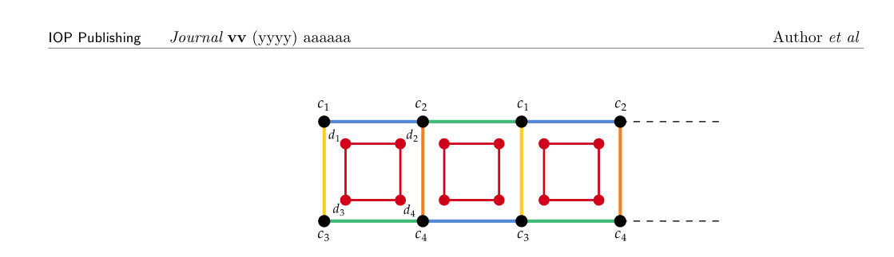
<figcaption class="paper-figure-caption"><b>Fig 1.</b> Figure 1. Illustration of the ladder. The color blue refers to the coupling J1, the color green to the coupling J2, the color yellow to the coupling J3 and the color orange to the coupling J4. We also illustrate the presence at each site of the Majorana fermions cj and dj. The Majorana fermions dj encode the presence of a macroscopic degeneracy associated to the ground state e.g. for a blue link we have the two possible ground states | +x −x⟩and | −x +x⟩. The Majorana fermions dj in the ladder geometry then encode the Z2 gauge fields that result in the loop operator Wp = ±1 referring to 0, π flux ground state.</figcaption>
</figure>
<figure class="paper-figure-card">
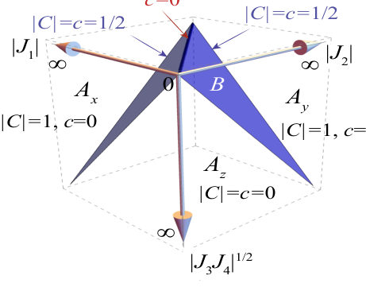
<figcaption class="paper-figure-caption"><b>Fig 2.</b> Figure 2. Phase diagram for generic Ji’s including three quantum spin liquid phases Ax, Ay, Az, with a gap in the bulk, and the Majorana liquid phase B. The metallic phase B refers to the surface with ||J1| −|J2|| = p</figcaption>
</figure>
<figure class="paper-figure-card">
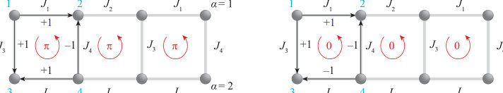
<figcaption class="paper-figure-caption"><b>Fig 3.</b> Figure 3. Generalized Lieb theorem on the ladder geometry. In the ground state, the flux sector (red arrow) selects (a) Wp = −1, π flux when the number of AFM couplings (Ji &gt; 0) is even and (b) Wp = +1, 0 flux when odd. The (±) signs are assigned to the linking variables uν j,k = ibν j bν k following the direction of black arrows on the bonds.</figcaption>
</figure>
<figure class="paper-figure-card">
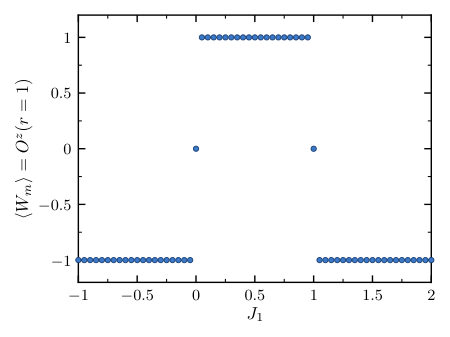
<figcaption class="paper-figure-caption"><b>Fig 4.</b> Figure 4. Illustration of the flux for the ground state from ⟨Wm⟩= ⟨Oz(r = 1)⟩= (−1)⟨σy 1σy 2σx 3 σx 4 ⟩[27] in iDMRG for the path J3 = J4 = 1, J2 = J1 −J3 as a function of J1.</figcaption>
</figure>
<figure class="paper-figure-card">
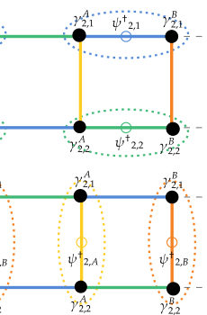
<figcaption class="paper-figure-caption"><b>Fig 5.</b> Figure 5. Mappings with Horizontal Bond Fermions (top) and with Vertical Bond Fermions (bottom).</figcaption>
</figure>
</div>

<p><strong>Summary.</strong> This work analyzes a generalized ladder spin model to explore topological quantum spin liquid phases. By mapping the system onto Majorana fermions and applying advanced theoretical tools, the authors classify the phase diagram, predicting protected Majorana edge modes in gapped phases. This establishes a strong theoretical link between frustrated magnetism and topological superconductivity.</p>
<p><strong>Why it may be interesting.</strong> The rigorous connection established between magnetic spin models (quantum spin liquids) and topological superconductivity via Majorana fermions is highly relevant for understanding emergent phenomena in condensed matter systems.</p>
<details>
<summary>Detailed structure</summary>
<p><strong>Main problem.</strong> The paper investigates the existence and properties of topological quantum spin liquids in a ladder system, specifically linking magnetic models to $p$-wave superconductivity.</p>
<p><strong>Main result.</strong> The model predicts three distinct spin-liquid phases and a metallic phase, characterized by a bulk-edge correspondence that reveals protected zero-energy Majorana fermions at the edges in gapped regions.</p>
<p><strong>Method.</strong> The analysis employs a combination of quantum field theory, Density Matrix Renormalization Group (DMRG) techniques, and mathematical diagonalization of the Majorana fermion representation.</p>
<p><strong>Model / system.</strong> The system is a generalized ladder geometry, modeled as a spin Hamiltonian derived from a generalization of the Kitaev honeycomb model. It is mapped onto Majorana fermions coupled via $Z_2$ gauge fields.</p>
<p><strong>Key observables.</strong> Topological invariant ($
u$ or $|C|$), central charge ($c$), and the presence/absence of zero-energy Majorana edge modes.</p>
<p><strong>Important parameters / regimes.</strong> Coupling constants ($J_1, J_2, J_3, J_4$) and the relative signs of these couplings, which determine the flux sector ($  ext{0}$ or $\pi$).</p>
<p><strong>Assumptions / limitations.</strong> The analysis initially focuses on the case where all couplings $J_i \ge 0$, though the method is shown to be generalizable.</p>
<p><strong>Figures summary.</strong> Figures illustrate the ladder structure with couplings and Majorana fermions, the phase diagram showing three spin-liquid phases and a metallic phase, and diagrams detailing the flux selection based on coupling signs.</p>
<p><strong>Paper structure.</strong> The paper progresses by defining the Hamiltonian, mapping it to Majorana fermions, utilizing quantum field theory and DMRG to classify the topological phases via observables, and finally establishing the bulk-edge correspondence.</p>
</details>
<details>
<summary>Abstract</summary>
<p>In this article, we address the possibility of topological quantum spin liquids with only short-range (spin) correlations in the whole phase diagram in a ladder system, through an exactly solvable model which represents a generalization of the two-dimensional Kitaev honeycomb spin model to a ribbon geometry. This system gives rise to $\mathbb{Z}_2$ gauge fields emerging in a static way in the ground state through Majorana fermions which then produce either $0$ or $π$ flux. Through a quantum field theory perspective, mathematical and Density Matrix Renormalization Group results, we present our progress on the geometrical, topological and physical classification of this model through observables navigating on the whole phase diagram presenting three spin-liquid phases with a spin gap and a metallic phase in the sense of Majorana fermions. We propose a bulk-edge correspondence revealing the presence of protected zero-energy Majorana fermions at the edge in the phases with a gap and revealing also the presence of itinerant Majorana fermions in the bulk in the topological liquid phase. The proposed approach allows us to distinguish between properties of the brickwall ladder giving rise to a special line and those of the square ladder allowing for the gapless Majorana liquid phase. This model gives some hope on finding solutions for topological quantum spin models, e.g. with $π$ flux, on a square lattice geometry. This approach also allows for a correspondence onto models of topological superconductivity.</p>
</details>
<p><sub><a href="#top">↑ back to top</a></sub></p>

<p><a id="paper-2610.40612"></a></p>
<h3 id="exceptional-points-as-witnesses-of-non-gaussian-noise"><a href="http://arxiv.org/abs/2610.40612v1">Exceptional Points as Witnesses of Non-Gaussian Noise</a></h3>
<p><strong>Authors:</strong> Aritra Ghosh, Subhashish Banerjee, M. Bhattacharya<br>
<strong>Type:</strong> theory · <strong>Category:</strong> statistical mechanics · <strong>PDF:</strong> <a href="https://arxiv.org/pdf/2610.40612v1">https://arxiv.org/pdf/2610.40612v1</a><br>
<strong>Analysis basis:</strong> full PDF text, analyzed in chunks
<strong>Topic relevance:</strong> <code>Keldysh / 2PI / non-Gaussian methods</code> <strong>2/5</strong> · <code>correlated / nonlocal dissipation</code> <strong>2/5</strong> · <code>driven-dissipative phase transition</code> <strong>2/5</strong> · <code>quantum measurements</code> <strong>2/5</strong> · <code>analog quantum simulation</code> <strong>1/5</strong> · <code>methods for driven-dissipative</code> <strong>1/5</strong> · <code>non-equilibrium universality</code> <strong>1/5</strong></p>
<div class="figure-strip-hint">↔ Scroll figures horizontally</div>
<div class="paper-figures-scroll">
<figure class="paper-figure-card">
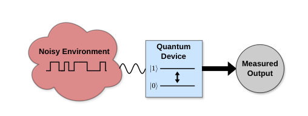
<figcaption class="paper-figure-caption"><b>Fig 1.</b> FIG. 1: Schematic of environmental noise coupled to a quantum system whose output is monitored. The fluctuations can degrade device performance while also imprinting statistical information on the measured re- sponse, including signatures of non-Gaussian statistics.</figcaption>
</figure>
<figure class="paper-figure-card">
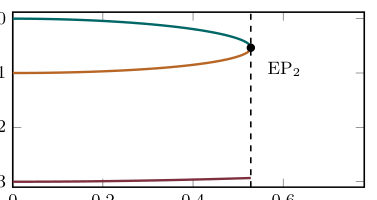
<figcaption class="paper-figure-caption"><b>Fig 2.</b> FIG. 2: Real eigenvalues of the tilted three-state gener- ators for the two switching rules with matched statistics up to the third order, as a function of the rescaled noise coupling σ|χ|/γ. In (a), all the three branches meet at an EP3. In (b), only two branches meet at an EP2.</figcaption>
</figure>
<figure class="paper-figure-card">

<figcaption class="paper-figure-caption"><b>Fig 3.</b> Fig. 2 shows the mode coalescences. To obtain this result (see End Matter), we start with the stationary probabil- ities, follow the phase accumulated as the noise switches among its three states, and sum over the final states to recover the device’s coherence. The positive and neg- ative states accumulate opposite noise-induced phases,</figcaption>
</figure>
<figure class="paper-figure-card">
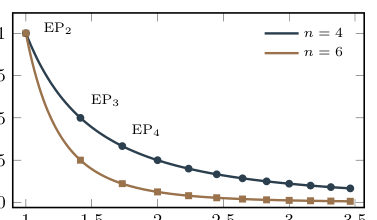
<figcaption class="paper-figure-caption"><b>Fig 4.</b> FIG. 3: Scaling of cumulants with EPM+1 location at x = |χ(M) EP |/|χEP| = √</figcaption>
</figure>
<figure class="paper-figure-card">
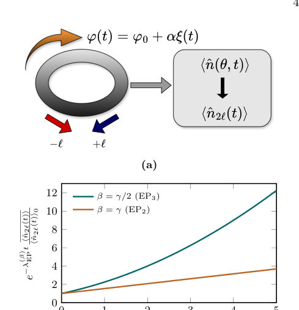
<figcaption class="paper-figure-caption"><b>Fig 5.</b> FIG. 4: (a) Schematic of a ring condensate with oppo- site winding components and fluctuating synthetic flux. (b) Exponentially weighted normalized density harmonic at the respective EPs of the input noises ηγ/2 and ηγ, whose correlations agree up to the third order. The curves use separate α values corresponding to σ|χ2ℓ|/γ = 1/ √</figcaption>
</figure>
</div>

<p><strong>Summary.</strong> This paper introduces Exceptional Points (EPs) as a novel diagnostic tool to characterize non-Gaussian environmental noise in quantum systems. By analyzing the EP structure in the dephasing response, the authors demonstrate that one can distinguish between noise sources even when their mean and power spectrum are identical. This provides a crucial pathway for improving quantum devices by accurately quantifying environmental coupling.</p>
<p><strong>Why it may be interesting.</strong> This work provides a powerful, non-standard diagnostic tool (EPs) to characterize the complex, non-Gaussian nature of realistic environmental noise impacting quantum coherence, which is crucial for building reliable quantum technologies.</p>
<details>
<summary>Detailed structure</summary>
<p><strong>Main problem.</strong> The primary challenge is characterizing non-Gaussian environmental noise in quantum devices, as standard measurements like the power spectrum are insufficient to capture the full environmental statistics.</p>
<p><strong>Main result.</strong> Exceptional Points (EPs) in the noise-averaged dephasing response provide a diagnostic tool capable of distinguishing between noise environments that share identical mean, power spectrum, and even third-order correlations.</p>
<p><strong>Method.</strong> The authors use the mathematical framework of Exceptional Points (EPs) arising from the noise-averaged dephasing response ($\Phi$) to probe higher-order noise statistics.</p>
<p><strong>Model / system.</strong> The study models quantum systems undergoing dephasing due to environmental noise, often considering the noise as a sum of $M$ independent sources. The analysis is applied to an atomtronic readout involving a ring-trapped condensate.</p>
<p><strong>Key observables.</strong> The order of the Exceptional Point ($r$ or $R_M$), the coherence factor ($\Phi$), and higher-order connected correlations ($    ext{C}^{(M)}_n$).</p>
<p><strong>Important parameters / regimes.</strong> The number of independent noise sources ($M$), the noise coupling strength ($\chi$), and the noise correlation time ($ au$).</p>
<p><strong>Assumptions / limitations.</strong> The analysis assumes the noise can be modeled as a sum of independent sources, and the Gaussian limit is established via the Central Limit Theorem.</p>
<p><strong>Figures summary.</strong> Figures illustrate the coalescence of eigenvalues at EPs for different noise models (EP3 vs. EP2) and show the scaling of cumulants with the EP location, confirming the statistical distinction.</p>
<p><strong>Paper structure.</strong> The paper progresses by first establishing the insufficiency of low-order statistics, then developing the EP diagnostic tool, demonstrating its power by distinguishing two switching noise models, and finally analyzing the scaling behavior for multiple independent noise sources and the Gaussian limit.</p>
</details>
<details>
<summary>Abstract</summary>
<p>Efficient control of quantum devices requires the knowledge of their environmental noise, yet the commonly measured power spectrum does not fully characterize non-Gaussian fluctuations of realistic environments. Here we show that exceptional points (EPs) in the noise-averaged dephasing response can expose observable signatures of non-Gaussian statistics, distinguishing environments with identical lower-order statistics. We also introduce a theoretical model that describes dephasing environments in terms of identical independent noise sources while preserving the power spectrum. Given a calibrated single-source model, the largest EP order extracted from the measured dephasing response determines the number of sources and predicts the higher-order statistics of the combined noise. We illustrate an atomtronic readout that maps distinct EP signatures onto an evolving ensemble-averaged atomic interference pattern. Our results connect non-Hermitian dynamics to environmental noise statistics, providing a route to characterize noise in quantum devices used in computing, metrology, and precision measurement.</p>
</details>
<p><sub><a href="#top">↑ back to top</a></sub></p>

<p><a id="paper-2610.39013"></a></p>
<h3 id="spectral-theory-of-large-data-with-power-law-latent-features"><a href="http://arxiv.org/abs/2610.39013v1">Spectral theory of large data with power-law latent features</a></h3>
<p><strong>Authors:</strong> Philipp Fleig<br>
<strong>Type:</strong> theory · <strong>Category:</strong> disordered systems and neural networks · <strong>PDF:</strong> <a href="https://arxiv.org/pdf/2610.39013v1">https://arxiv.org/pdf/2610.39013v1</a><br>
<strong>Analysis basis:</strong> full PDF text, analyzed in chunks
<strong>Topic relevance:</strong> <code>Keldysh / 2PI / non-Gaussian methods</code> <strong>2/5</strong> · <code>methods for driven-dissipative</code> <strong>2/5</strong> · <code>analog quantum simulation</code> <strong>1/5</strong> · <code>correlated / nonlocal dissipation</code> <strong>1/5</strong> · <code>driven-dissipative phase transition</code> <strong>1/5</strong> · <code>non-equilibrium universality</code> <strong>1/5</strong> · <code>quantum measurements</code> <strong>1/5</strong> · <code>scars &amp; prethermalization</code> <strong>1/5</strong></p>
<div class="figure-strip-hint">↔ Scroll figures horizontally</div>
<div class="paper-figures-scroll">
<figure class="paper-figure-card">
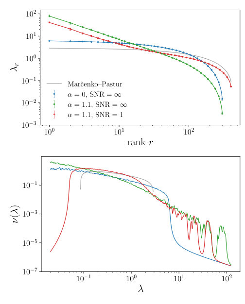
<figcaption class="paper-figure-caption"><b>Fig 1.</b> FIG. 1. Spectral phenomenology of the power-law latent fea- ture model. Top: ranked eigenvalue spectra. Bottom: the corresponding eigenvalue densities. Blue: α = 0, noiseless. Green: α = 1.1, noiseless. Red: α = 1.1 at SNR = 1. Grey: the Marˇcenko–Pastur distribution of pure noise at aspect ratio q, in the same trace normalisation. Simulations of the model at N = 400, ℓ= 300, and T = 800 (q = 0.5 and qV = 0.75). Lines are the rank-wise means over 20 independent realisa- tions. Points mark log-spaced ranks. Error bars mark the 10th–90th percentile range over realisations and are small. The N −ℓzero eigenvalues of the noiseless spectra are omit- ted on the logarithmic axes. The densities are...</figcaption>
</figure>
<figure class="paper-figure-card">
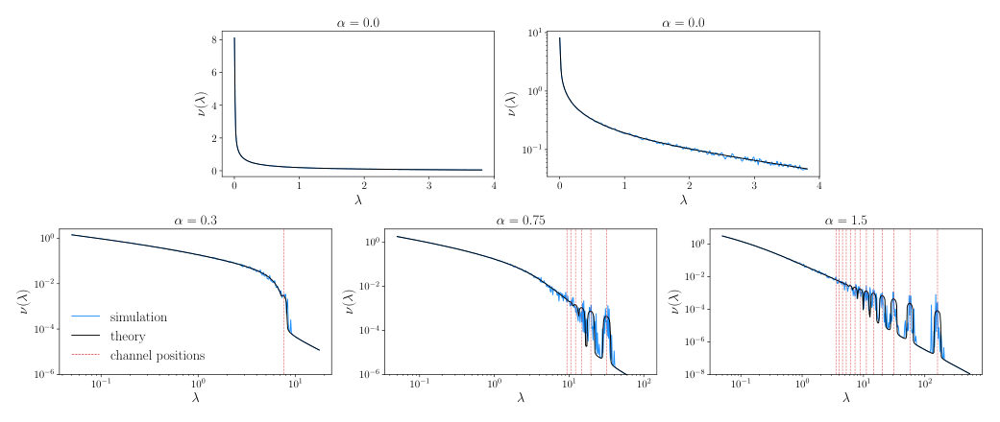
<figcaption class="paper-figure-caption"><b>Fig 2.</b> FIG. 2. Theory versus simulated densities across the power-law exponent regimes. Panels: exponent values α ∈ {0, 0.3, 0.75, 1.5}, without noise. The α = 0 panel is shown on linear and on logarithmic density axes. Blue: Lorentzian- smoothed empirical density. Black: density from the self-consistent equations. Red dashed vertical lines: channel positions, the roots of the outlier condition, Eq. (46). All panels at N = 400, ℓ= 300, and T = 800 (q = 0.5 and qV = 0.75). Both densities are smoothed at width η = 0.01. The empirical density is averaged over 80 independent realisations.</figcaption>
</figure>
<figure class="paper-figure-card">
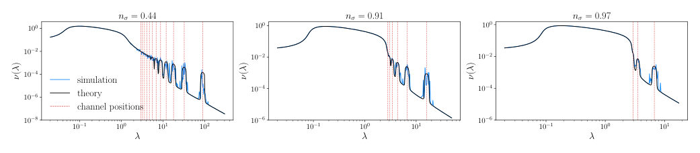
<figcaption class="paper-figure-caption"><b>Fig 3.</b> FIG. 3. Theory versus simulated densities across noise levels. Panels: noise levels σ2 ∈{2, 25, 75} (nσ ≈0.44, 0.91, 0.97; SNR ≈1.25, 0.10, 0.033) at α = 1.5. The noiseless baseline is the α = 1.5 panel of Fig. 2. Blue: Lorentzian-smoothed empirical density. Black: density from the self-consistent equations. Dashed vertical lines: channel positions, the roots of the outlier condition, Eq. (46). All panels at N = 400, ℓ= 300, and T = 800 (q = 0.5 and qV = 0.75). Both densities are smoothed at width η = 0.01. The empirical density is averaged over 80 independent realisations.</figcaption>
</figure>
<figure class="paper-figure-card">
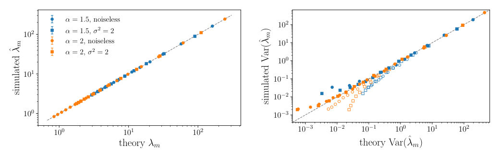
<figcaption class="paper-figure-caption"><b>Fig 4.</b> FIG. 4. Theory versus simulation at the top of the spectrum. Positions (left) and fluctuations (right) of the outlier eigenvalues, the dashed lines marking equality. Left: theory position from the outlier condition, Eq. (46), versus the simulated rank-wise mean, for all channel-tracked ranks of four ensembles: α ∈{1.5, 2} (blue and orange, respectively), noiseless (circles) and noisy at σ2 = 2 (squares). Right: theory versus simulated variance of the top eigenvalues, for the same ensembles and ranks in the same conventions. Filled markers: the fluctuation law, Eq. (47). Open markers: its far-outlier limit, Eq. (H15). All ensembles at N = 400, ℓ= 300, and T = 800 (q = 0.5 and qV = 0.75),...</figcaption>
</figure>
<figure class="paper-figure-card">
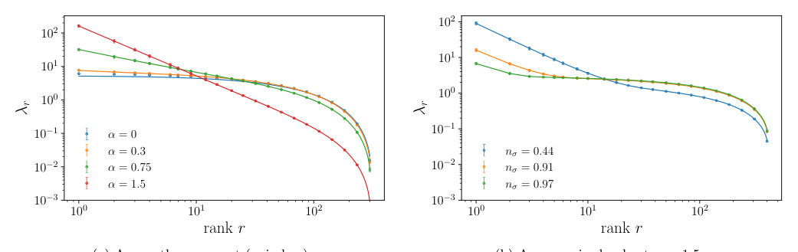
<figcaption class="paper-figure-caption"><b>Fig 5.</b> FIG. 5. Ranked-spectrum version of the density comparisons of Figs. 2 and 3, at the same parameters. (a) The noiseless ensembles of Fig. 2, α ∈{0, 0.3, 0.75, 1.5}. (b) The noise levels of Fig. 3, σ2 ∈{2, 25, 75} at α = 1.5; the noiseless α = 1.5 curve is in (a). Lines are the theory curves of Eq. (F2). Points are the simulated rank-wise means at log-spaced ranks, in the conventions of Fig. 1. Means over 80 independent realisations. Error bars mark the 10th–90th percentile range over realisations.</figcaption>
</figure>
</div>

<p><strong>Summary.</strong> This paper provides a rigorous spectral theory for analyzing large datasets whose underlying structure is governed by a power-law hierarchy of latent features. Using advanced Random Matrix Theory, the authors derive self-consistent equations to predict the bulk eigenvalue distribution and precisely quantify the behavior and fluctuations of any isolated, outlier eigenvalues. This work establishes a powerful 'generative null model' for structured data.</p>
<p><strong>Why it may be interesting.</strong> While the focus is on data analysis, the mathematical machinery—using RMT to characterize spectral rigidity and deviations from Gaussian behavior—is highly relevant to understanding spectral properties in complex quantum systems, such as those exhibiting disorder or structured correlations.</p>
<details>
<summary>Detailed structure</summary>
<p><strong>Main problem.</strong> The paper develops a quantitative spectral theory for the empirical covariance matrix of data generated by a latent feature model where the latent feature variances decay according to a power law.</p>
<p><strong>Main result.</strong> It derives closed leading-order self-consistent equations for the Stieltjes transform, allowing for the calculation of the bulk eigenvalue density and the positions/fluctuations of isolated top eigenvalues.</p>
<p><strong>Method.</strong> The theory heavily employs Random Matrix Theory (RMT), utilizing the mean Stieltjes transform and deriving self-consistent equations via variational principles and saddle-point approximations.</p>
<p><strong>Model / system.</strong> The model is a generative latent feature model $X := UV + \sigma R$, where $U$ are latent activities, $V$ has power-law decaying variances ($m^{-\alpha}$), and $R$ is additive measurement noise. The analysis focuses on the eigenvalues of the normalized Gram matrix $W = X^T X / \gamma^2$.</p>
<p><strong>Key observables.</strong> Bulk eigenvalue density ($
u(\lambda)$), isolated top eigenvalues ($\lambda_m$), and their variance ($   ext{Var}(\hat{\lambda}_m)$).</p>
<p><strong>Important parameters / regimes.</strong> Power-law exponent $\alpha$, latent aspect ratio $q_V = \ell/N$, and noise amplitude $\sigma$. Key regimes include super-critical ($\alpha > 1$) vs. sub-critical ($\alpha < 1$).</p>
<p><strong>Assumptions / limitations.</strong> The analysis is performed at leading order ($O(1/N)$) using the annealed average, which is assumed to match the quenched average. It also assumes Gaussian fluctuations for the latent channels.</p>
<p><strong>Figures summary.</strong> Figures illustrate spectral phenomenology for varying parameters ($\alpha$), comparing theoretical predictions to simulations, and showing the evolution of both the bulk density and the top eigenvalues.</p>
<p><strong>Paper structure.</strong> The paper first establishes the general RMT framework for the mean Stieltjes transform, deriving self-consistent equations. It then specializes this theory to the power-law latent feature model, deriving equations for the bulk density and separately deriving the fluctuation law for the discrete top eigenvalues.</p>
</details>
<details>
<summary>Abstract</summary>
<p>Power-law eigenvalue spectra of covariance matrices estimated from data appear in diverse domains ranging from neural populations to proteins. We introduce a generative latent feature model for such data, optionally corrupted by measurement noise, and develop its spectral theory. We derive closed leading-order self-consistent equations for the Stieltjes transform of the covariance matrix from which the bulk eigenvalue density is obtained and provide a variational principle for the self-consistent equations. We also compute the positions and fluctuations of isolated top eigenvalues. The theory is validated in known algebraic limits and tested against simulations.</p>
</details>
<p><sub><a href="#top">↑ back to top</a></sub></p>

<p><a id="paper-2610.40361"></a></p>
<h3 id="rapid-mixing-for-gibbs-samplers-for-quantum-spin-systems-with-all-to-all-interactions"><a href="http://arxiv.org/abs/2610.40361v1">Rapid mixing for Gibbs samplers for quantum spin systems with all-to-all interactions</a></h3>
<p><strong>Authors:</strong> Nicola Bertoni, Giacomo De Palma<br>
<strong>Type:</strong> theory · <strong>Category:</strong> statistical mechanics · <strong>PDF:</strong> <a href="https://arxiv.org/pdf/2610.40361v1">https://arxiv.org/pdf/2610.40361v1</a><br>
<strong>Analysis basis:</strong> full PDF text, analyzed in chunks
<strong>Topic relevance:</strong> <code>analog quantum simulation</code> <strong>2/5</strong> · <code>methods for driven-dissipative</code> <strong>2/5</strong> · <code>correlated / nonlocal dissipation</code> <strong>1/5</strong> · <code>driven-dissipative phase transition</code> <strong>1/5</strong> · <code>non-equilibrium universality</code> <strong>1/5</strong> · <code>scars &amp; prethermalization</code> <strong>1/5</strong></p>
<div class="figure-strip-hint">↔ Scroll figures horizontally</div>
<div class="paper-figures-scroll">
<figure class="paper-figure-card">
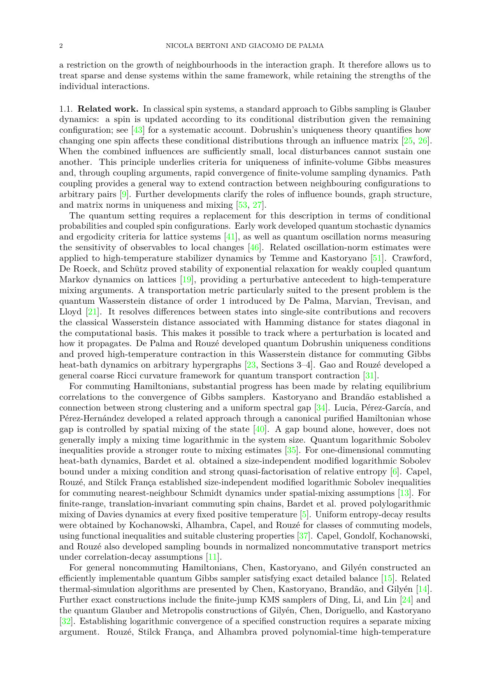
<figcaption class="paper-figure-caption"><b>Fig 1.</b> Low-resolution page preview, page 2</figcaption>
</figure>
<figure class="paper-figure-card">
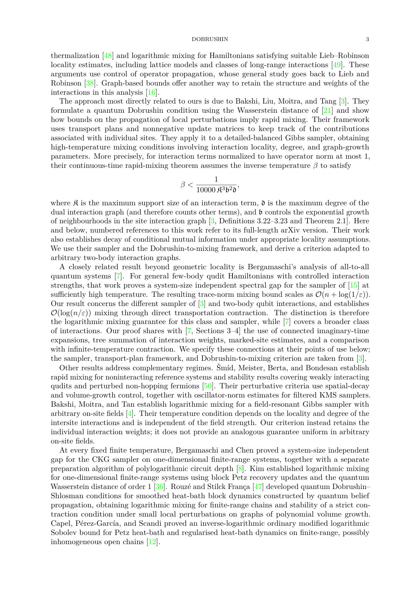
<figcaption class="paper-figure-caption"><b>Fig 2.</b> Low-resolution page preview, page 3</figcaption>
</figure>
<figure class="paper-figure-card">
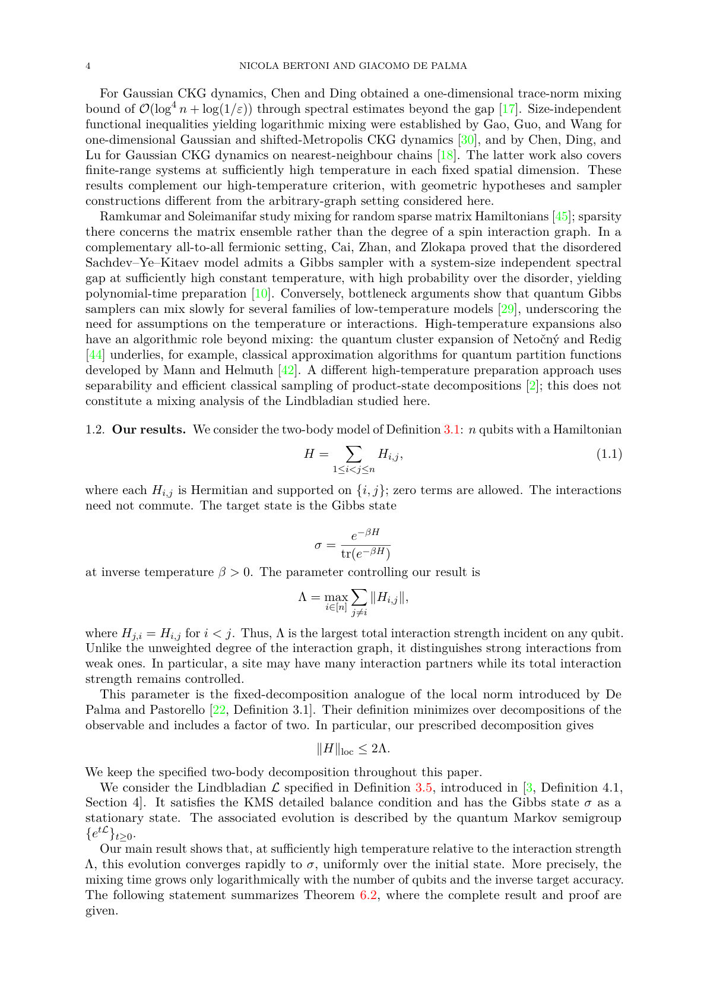
<figcaption class="paper-figure-caption"><b>Fig 3.</b> Low-resolution page preview, page 4</figcaption>
</figure>
<figure class="paper-figure-card">
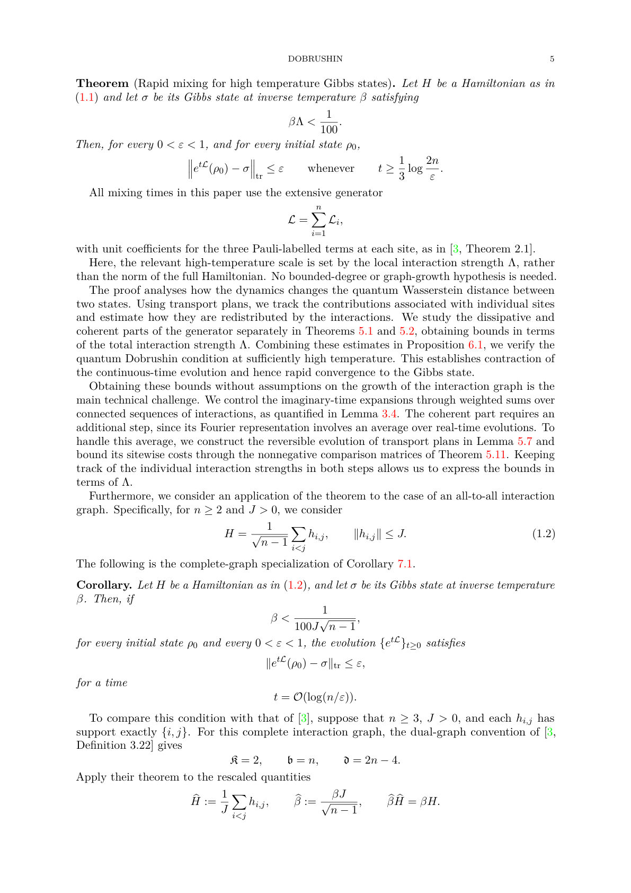
<figcaption class="paper-figure-caption"><b>Fig 4.</b> Low-resolution page preview, page 5</figcaption>
</figure>
<figure class="paper-figure-card">
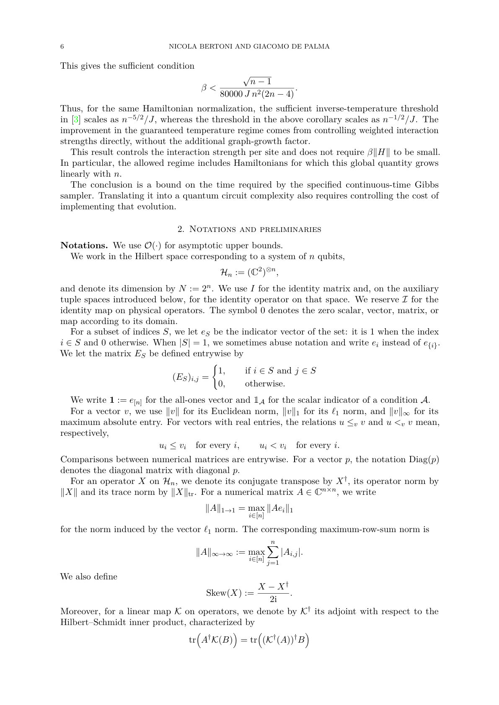
<figcaption class="paper-figure-caption"><b>Fig 5.</b> Low-resolution page preview, page 6</figcaption>
</figure>
</div>

<p><strong>Summary.</strong> This paper establishes conditions for rapid thermalization in quantum spin systems, particularly those with all-to-all interactions. By adapting the Dobrushin condition using quantum Wasserstein distance, the authors prove that the mixing time scales only logarithmically with system size. This result is significant because it provides robust bounds for Gibbs state preparation without assuming any specific spatial geometry for the interactions.</p>
<p><strong>Why it may be interesting.</strong> This work provides rigorous, geometry-independent bounds on thermalization times for complex quantum systems, which is crucial for understanding open quantum systems dynamics.</p>
<details>
<summary>Detailed structure</summary>
<p><strong>Main problem.</strong> The central problem is determining the conditions under which quantum many-body systems rapidly converge to their thermal equilibrium state (Gibbs state).</p>
<p><strong>Main result.</strong> The authors derive a sufficient condition ensuring that the mixing time for Gibbs state preparation is logarithmic in the system size, $O(\log(n/\epsilon))$, even for fully connected systems.</p>
<p><strong>Method.</strong> The approach uses a quantum analogue of the classical Dobrushin condition, quantifying perturbation propagation via the quantum Wasserstein distance of order 1.</p>
<p><strong>Model / system.</strong> The study focuses on two-body quantum spin Hamiltonians on arbitrary interaction graphs, including fully connected models, evolving under Lindblad dynamics satisfying KMS detailed balance.</p>
<p><strong>Key observables.</strong> The convergence rate to the Gibbs state $\sigma$, measured by the trace distance $\|
ho(t) - \sigma\|_{	ext{tr}}$.</p>
<p><strong>Important parameters / regimes.</strong> The inverse temperature ($eta$) and the maximum total interaction strength per site ($\Lambda$), which controls the high-temperature regime.</p>
<p><strong>Assumptions / limitations.</strong> The analysis is restricted to two-body qubit interactions and requires the temperature to be sufficiently high relative to the interaction strength ($eta\Lambda < 1/100$).</p>
<p><strong>Paper structure.</strong> The paper builds upon the Dobrushin-to-mixing framework, analyzing the dynamics via the quantum Wasserstein distance to derive contraction estimates for the Gibbs state preparation.</p>
</details>
<details>
<summary>Abstract</summary>
<p>Understanding when quantum many-body systems rapidly converge to thermal equilibrium is a central problem in quantum statistical mechanics. While spatial locality provides powerful tools for systems with an underlying geometry, fully connected models require estimates that accommodate interactions between every pair of spins. We study Gibbs-state preparation for two-local quantum Hamiltonians on arbitrary interaction graphs, including fully connected systems, via Lindblad dynamics that satisfies Kubo--Martin--Schwinger (KMS) detailed balance. Our approach is based on a quantum analogue of the classical Dobrushin condition, which controls the influence of local perturbations on the rest of the system. Using the quantum Wasserstein distance of order $1$, we quantify how these perturbations propagate under the dynamics and derive contraction estimates in a high-temperature regime controlled by the maximum total interaction strength per site. These estimates require no assumptions on spatial geometry or graph growth and yield mixing times logarithmic in the system size and the inverse error tolerance, uniformly over all initial states.</p>
</details>
<p><sub><a href="#top">↑ back to top</a></sub></p>

<p><a id="paper-2610.40442"></a></p>
<h3 id="time-reflection-refraction-crossover-at-topological-kramers-edge-states"><a href="http://arxiv.org/abs/2610.40442v1">Time Reflection-Refraction Crossover at Topological Kramers Edge States</a></h3>
<p><strong>Authors:</strong> Junpeng Hou, Ya-Jie Wu<br>
<strong>Type:</strong> theory · <strong>Category:</strong> other · <strong>PDF:</strong> <a href="https://arxiv.org/pdf/2610.40442v1">https://arxiv.org/pdf/2610.40442v1</a><br>
<strong>Analysis basis:</strong> full PDF text, analyzed in chunks
<strong>Topic relevance:</strong> <code>analog quantum simulation</code> <strong>2/5</strong> · <code>driven-dissipative phase transition</code> <strong>2/5</strong> · <code>non-equilibrium universality</code> <strong>2/5</strong> · <code>Keldysh / 2PI / non-Gaussian methods</code> <strong>1/5</strong> · <code>methods for driven-dissipative</code> <strong>1/5</strong></p>
<div class="figure-strip-hint">↔ Scroll figures horizontally</div>
<div class="paper-figures-scroll">
<figure class="paper-figure-card">
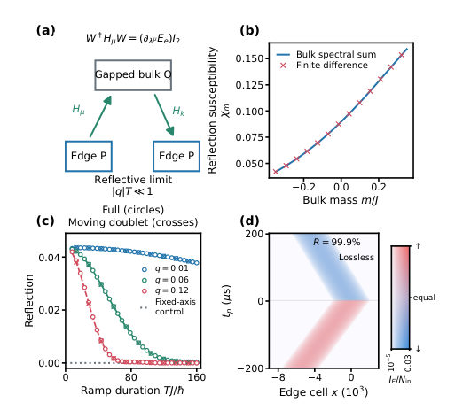
<figcaption class="paper-figure-caption"><b>Fig 1.</b> FIG. 2. Bulk contribution to edge-channel conversion. (a) A TR-even control is scalar in a fixed crossing doublet. Virtual transitions through Q change its velocity matrix. (b) Mass reflection susceptibility χm from the bulk spectral sum and a parallel-transported finite difference. (c) Full-ribbon (circles) and projected edge (crosses) dynamics. The mass ramp uses m/J : −0.35 →0.35, gy = 0, and (λSO, λR)/J = (0.15, 0.30). The fixed-axis control holds V and the initial and final velocity axes constant, giving R = 0. (d) Near- total time reflection, R = 99.9%, in the lossless coupled-mode model. Here (λSO, λR)/J = (0.50, 0.35) and T = 80. The curved path runs from λi/J ≃(−0.52, 0) to λf/J...</figcaption>
</figure>
<figure class="paper-figure-card">
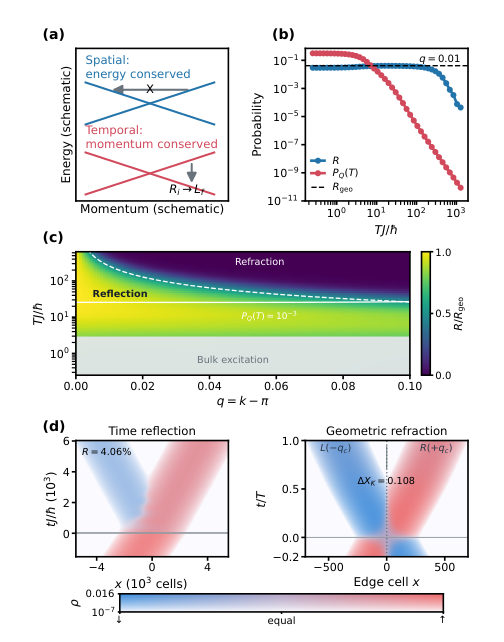
<figcaption class="paper-figure-caption"><b>Fig 2.</b> FIG. 1. Temporal scattering at a Kramers edge. (a) Static backscattering would connect opposite momenta at fixed energy, a process forbidden by TRS. Time reflection connects opposite-velocity channels at fixed momentum. (b) At q = 0.01, final weight outside the edge doublet PQ(T) becomes small while reflection remains finite. (c) Time re- flection map in (q, T). The gray band marks T &lt; ∆−1 b . Solid and dashed white contours denote PQ(T) = 10−3 and R/Rgeo = 1/2, where Rgeo is the limiting reflection proba- bility with negligible bulk excitation. (d) Examples of time reflective and refractive packets. Hue denotes spin polariza- tion and brightness denotes density. All panels use the same...</figcaption>
</figure>
<figure class="paper-figure-card">
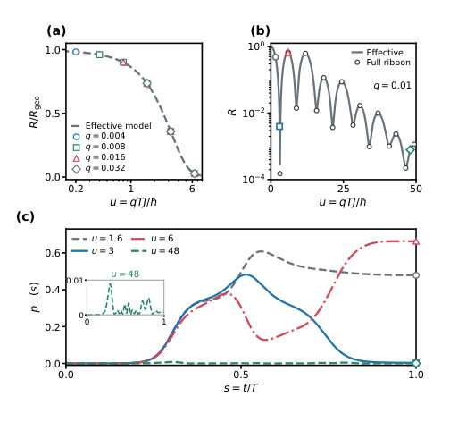
<figcaption class="paper-figure-caption"><b>Fig 3.</b> FIG. 3. Reflection-refraction crossover. (a) Normalized reflection R(q, T)/Rgeo on full ribbons with the effective pre- diction R(u) using parameters in Fig. 1(d). (b) Reflection R at q = 0.01 using parameters from Fig. 2(d). Colored symbols select the durations in (c). (c) Effective negative-velocity oc- cupation p−(s) at different u on the same path as (b). The inset enlarges u = 48.</figcaption>
</figure>
<figure class="paper-figure-card">
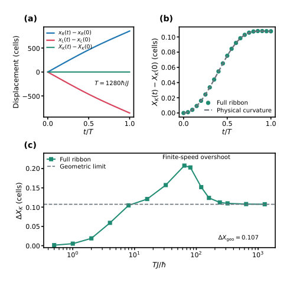
<figcaption class="paper-figure-caption"><b>Fig 4.</b> FIG. 4. Geometric refraction of initially TR-related packets. (a) Full-ribbon physical displacements and their midpoint. (b) Midpoint compared with the curvature inte- gral averaged over the same incident spectrum. (c) Midpoint displacement versus duration at fixed spectrum. The dashed line marks the slow ramp limit ∆Xgeo = 0.107 cells.</figcaption>
</figure>
</div>

<p><strong>Summary.</strong> This paper theoretically examines how time-dependent modulation controls transport at topological Kramers edge states, leading to a crossover between time reflection and time refraction. By analyzing the edge subspace dynamics, the authors show that the process is governed by the product of momentum offset and ramp time ($qT$). This work demonstrates that temporal control can isolate and measure the geometric contribution of the Berry curvature in these protected quantum channels.</p>
<p><strong>Why it may be interesting.</strong> The work provides a detailed theoretical framework for controlling topological edge states using time-dependent driving, which is highly relevant for understanding coherent quantum transport in engineered superconducting or topological materials.</p>
<details>
<summary>Detailed structure</summary>
<p><strong>Main problem.</strong> The paper investigates the crossover between time reflection and time refraction phenomena at topological Kramers edge states when subjected to time-dependent modulation.</p>
<p><strong>Main result.</strong> Temporal modulation allows for controlled time reflection/refraction even when time-reversal symmetry is preserved, and the adiabatic limit isolates the Berry curvature contribution to the geometric displacement.</p>
<p><strong>Method.</strong> The analysis uses effective Schrödinger equations for the edge subspace, employing covariant derivatives and analyzing the evolution in a parallel frame to derive scaling laws based on the product of momentum offset and ramp duration (qT).</p>
<p><strong>Model / system.</strong> The system is modeled using Quantum Spin Hall (QSH) edge states, analyzed via an effective Hamiltonian that couples the edge doublet to the bulk spectrum. The dynamics are controlled by a time-dependent parameter that drives the system through a Kramers crossing.</p>
<p><strong>Key observables.</strong> Reflection probability (R), Refraction probability (T), physical geometric displacement ($\Delta X_K$), and the scaling dependence on $qT$.</p>
<p><strong>Important parameters / regimes.</strong> The crossover dynamics are governed by the product $qT$, the finite bulk gap ($\Delta_b$), and the vanishing edge splitting ($\Delta_e(q)$) at the crossing.</p>
<p><strong>Assumptions / limitations.</strong> The analysis assumes a finite bulk gap, allowing the edge subspace to track the control, and utilizes approximations to decouple the edge dynamics from the bulk continuum.</p>
<p><strong>Figures summary.</strong> Figures illustrate temporal scattering, contrasting forbidden static backscattering with allowed time reflection. They also show the dependence of reflection on $qT$ and the convergence of the physical pair midpoint to the geometric limit in the adiabatic regime.</p>
<p><strong>Paper structure.</strong> The paper develops the dynamics by projecting the full Hamiltonian onto the edge subspace, deriving the evolution equation in the parallel frame, analyzing the resulting coupled differential equations for branch amplitudes, and finally calculating the geometric displacement in the adiabatic limit.</p>
</details>
<details>
<summary>Abstract</summary>
<p>Time-reversal symmetry protects helical edge states against static nonmagnetic backscattering. We show that spatially uniform temporal modulation produces a time reflection-refraction crossover within the same quantum spin Hall phase while preserving time-reversal symmetry of the instantaneous Hamiltonian. A finite gap to the bulk and an edge splitting that vanishes at the Kramers crossing allow the modulation to suppress bulk excitation while remaining nonadiabatic between the edge channels. Virtual transitions through bulk states enable coherent conversion between counter-propagating edge channels at fixed crystal momentum. Near the crossing, $qT$ governs the leading crossover dynamics for a fixed ramp shape, where $q$ is the momentum offset and $T$ the ramp duration. Coherent interference can suppress and restore reflection as the ramp slows. In the adiabatic limit, two initially time-reversed wave packets follow their respective propagation branches and acquire equal geometric displacements. Their group-velocity contributions cancel, isolating the contribution from the Berry curvature to be directly observable. Temporal modulation thus controls protected states and quantum geometry along a topological edge.</p>
</details>
<p><sub><a href="#top">↑ back to top</a></sub></p>

<p><a id="paper-2610.39208"></a></p>
<h3 id="force-sensing-in-a-recoverable-bosonic-quantum-memory"><a href="http://arxiv.org/abs/2610.39208v1">Force Sensing in a Recoverable Bosonic Quantum Memory</a></h3>
<p><strong>Authors:</strong> Tairong Bai, Wen Zheng, Haoyang Cai, Xianke Li, Yangyang Ge, Kun Zhou, Xiangmin Yu, Yu Zhang, Shaoxiong Li, Xinsheng Tan, Jie Zhao, Yang Yu<br>
<strong>Type:</strong> theory · <strong>Category:</strong> quantum information and computing · <strong>PDF:</strong> <a href="https://arxiv.org/pdf/2610.39208v1">https://arxiv.org/pdf/2610.39208v1</a><br>
<strong>Analysis basis:</strong> full PDF text, analyzed in chunks
<strong>Topic relevance:</strong> <code>quantum measurements</code> <strong>2/5</strong> · <code>QC/QI experiment</code> <strong>1/5</strong> · <code>Tavis-Cummings &amp; cavity-many-emitter</code> <strong>1/5</strong> · <code>analog quantum simulation</code> <strong>1/5</strong> · <code>correlated / nonlocal dissipation</code> <strong>1/5</strong> · <code>methods for driven-dissipative</code> <strong>1/5</strong></p>
<div class="figure-strip-hint">↔ Scroll figures horizontally</div>
<div class="paper-figures-scroll">
<figure class="paper-figure-card">
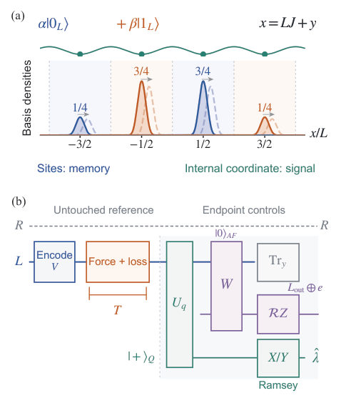
<figcaption class="paper-figure-caption"><b>Fig 1.</b> FIG. 1. Simultaneous force sensing and recoverable quantum storage in a single bosonic mode. (a) Logical qubit amplitudes are encoded across discrete wave-packet sites with binomial weights (1/4 and 3/4), while a shared internal coordinate y (x = LJ + y) captures the force-induced displacement, illus- trated by dashed lines. The green curve illustrates the periodic phase factor e−2πix/L, ensuring that the endpoint probe read- out is strictly independent of the logical state. (b) Protocol circuit. While retaining entanglement with an untouched ref- erence R, the encoded oscillator state (V ) accumulates a force signal under continuous photon loss over duration T. Under endpoint controls...</figcaption>
</figure>
<figure class="paper-figure-card">
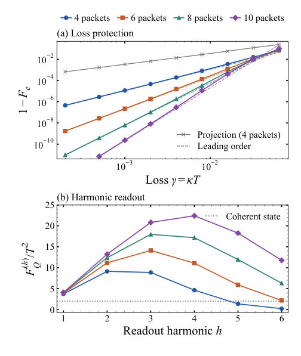
<figcaption class="paper-figure-caption"><b>Fig 2.</b> FIG. 2. Performance under continuous photon loss for four through ten wave packets using envelopes g(y) ∝ cos2r+2(πy/w) at L = 3 and w = 1.8. (a) Exact physical- channel memory entanglement infidelity 1 −Fe versus loss γ = κT at λT = 0.2 and h = 1. Dashed lines show the analyti- cal leading-order predictions of Eq. (10); gray crosses indicate unrecovered four-packet code projection (including erasures). (b) Normalized probe QFI F (h) Q /T 2 versus readout harmonic h at γ = 10−3, compared against the coherent-state bench- mark 2τ 2 κ/T 2 ≃2 (dotted line). Tighter spatial localization of higher-order envelopes slows form-factor decay, shifting the optimal readout to higher harmonics.</figcaption>
</figure>
<figure class="paper-figure-card">
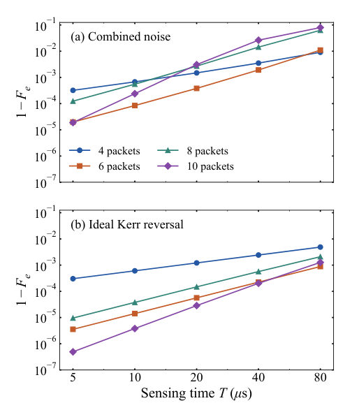
<figcaption class="paper-figure-caption"><b>Fig 3.</b> FIG. 3. Cavity memory benchmarks showing entanglement infidelity 1 −Fe versus sensing duration T under (a) com- bined photon loss (T c 1 = 25.6 ms), residual Kerr nonlinearity (K/2π = 3.6 Hz), and intrinsic number dephasing (Tϕ = 0.5 s), and (b) the same evolution followed by endpoint Kerr reversal, evaluated at λT = 0.2 and h = 2. At T = 20 µs, the six-packet code is optimal without compensation, whereas the ten-packet code performs best with Kerr reversal.</figcaption>
</figure>
<figure class="paper-figure-card">
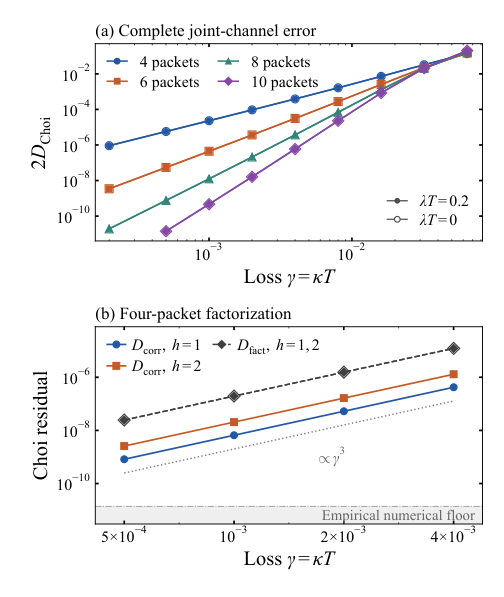
<figcaption class="paper-figure-caption"><b>Fig 4.</b> FIG. 4. Joint-channel tests retaining the reference, erasures, and physical-cell crossings. (a) The computed bound 2DChoi in Eq. (A6) for four through ten packets at h = 1. Filled and open markers show λT = 0.2 and 0. (b) Four-packet Choi residuals in Eq. (A7) at λT = 0.2 for h = 1, 2. Both exhibit cubic scaling in the resolved window; the two Dfact curves coincide. The dotted guide shows γ3; the empirical residual floor is indicated.</figcaption>
</figure>
</div>

<p><strong>Summary.</strong> This paper presents a method to overcome the fundamental conflict between quantum sensing and error correction in bosonic quantum memories. By designing specific finite-energy bosonic codes and implementing a binomial site recovery protocol, the authors enable the memory to sense external forces while actively protecting the stored quantum information. This results in highly suppressed errors and state-independent readout, paving the way for practical quantum sensing devices.</p>
<p><strong>Why it may be interesting.</strong> This work provides a concrete, scalable theoretical framework for integrating sensing and QEC in bosonic systems, directly relevant to superconducting circuit implementations of quantum memories.</p>
<details>
<summary>Detailed structure</summary>
<p><strong>Main problem.</strong> The paper addresses the intrinsic trade-off between quantum sensing (which requires accumulating external displacements) and quantum error correction (which suppresses such shifts) within a single bosonic quantum memory.</p>
<p><strong>Main result.</strong> By employing finite-energy bosonic codes and binomial site recovery, the authors achieve a protocol where the force sensing readout is independent of the logical state, suppressing memory infidelity to $O(\gamma^{r+1})$ and memory-probe correlations to $O(\gamma^{r+2})$.</p>
<p><strong>Method.</strong> The analysis involves constructing and analyzing the joint output channel mapping the encoded memory state to the recovered logical register and the unmeasured probe, utilizing systematic site recovery operators.</p>
<p><strong>Model / system.</strong> The system is a bosonic quantum memory, modeled using superconducting cavities, where logical information is encoded across discrete wave-packet sites, and the external force signal is captured in a shared internal coordinate.</p>
<p><strong>Key observables.</strong> Memory Infidelity ($1 - F_e$), Probe Quantum Fisher Information ($F_Q$), and Memory-Probe Correlations.</p>
<p><strong>Important parameters / regimes.</strong> Photon loss rate ($\gamma$), code size (number of packets $2r+2$), and the ratio of coherence times ($T/T_\phi$).</p>
<p><strong>Assumptions / limitations.</strong> The analysis assumes the displacement remains within a positive decoding guard, and it treats state preparation and endpoint controls as ideal impulses.</p>
<p><strong>Figures summary.</strong> Figures illustrate the encoding scheme (logical amplitudes across sites and a shared coordinate) and the full protocol circuit, showing encoding, force accumulation, readout, and recovery steps.</p>
<p><strong>Paper structure.</strong> The paper systematically develops the encoding scheme, derives the joint output channel, proves the error suppression scaling using binomial site recovery, and concludes with superconducting circuit benchmarks comparing different noise regimes.</p>
</details>
<details>
<summary>Abstract</summary>
<p>In continuous-variable quantum information, sensing and quantum error correction in the same mode face an intrinsic trade-off: sensors must accumulate weak external displacements, whereas bosonic codes typically suppress such shifts as errors. Here, we establish compatibility by constructing finite-energy bosonic codes that enable a single oscillator to sense an external force while actively protecting an unknown logical qubit. By encoding logical amplitudes across discrete wave-packet sites and capturing the force signal in a shared internal coordinate, we achieve an endpoint probe readout that is independent of the logical state under continuous photon loss $γ$. Crucially, binomial site recovery cancels packet-dependent probe distortions alongside logical errors: for a $(2r+2)$-packet code, memory infidelity is suppressed to $O(γ^{r+1})$ while residual memory-probe correlations scale as $O(γ^{r+2})$. Finally, superconducting quantum circuit benchmarks under competing photon-number dephasing and Kerr nonlinearity identify preferred encoding regimes for hardware implementation.</p>
</details>
<p><sub><a href="#top">↑ back to top</a></sub></p>

<p><a id="paper-2610.40084"></a></p>
<h3 id="multi-excited-random-walks-on-general-trees"><a href="http://arxiv.org/abs/2610.40084v1">Multi-excited random walks on general trees</a></h3>
<p><strong>Authors:</strong> Jack Mills, Tuan-Minh Nguyen<br>
<strong>Type:</strong> theory · <strong>Category:</strong> statistical mechanics · <strong>PDF:</strong> <a href="https://arxiv.org/pdf/2610.40084v1">https://arxiv.org/pdf/2610.40084v1</a><br>
<strong>Analysis basis:</strong> full PDF text, analyzed in chunks
<strong>Topic relevance:</strong> <code>analog quantum simulation</code> <strong>2/5</strong> · <code>driven-dissipative phase transition</code> <strong>2/5</strong> · <code>non-equilibrium universality</code> <strong>2/5</strong> · <code>Keldysh / 2PI / non-Gaussian methods</code> <strong>1/5</strong></p>
<div class="figure-strip-hint">↔ Scroll figures horizontally</div>
<div class="paper-figures-scroll">
<figure class="paper-figure-card">
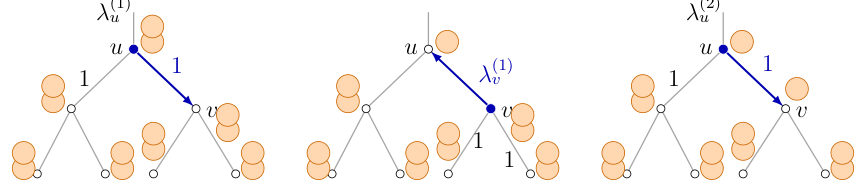
<figcaption class="paper-figure-caption"><b>Fig 1.</b> FIGURE 1. Three successive steps u →v →u →v of a walk started at u. Each vertex initially has a stack of 2 cookies.</figcaption>
</figure>
<figure class="paper-figure-card">
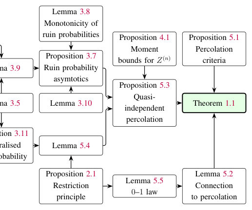
<figcaption class="paper-figure-caption"><b>Fig 2.</b> FIGURE 2. Dependencies of the results used in the proof of Theorem 1.1.</figcaption>
</figure>
</div>

<p><strong>Summary.</strong> This paper analyzes the recurrence and transience of a memory-dependent random walk (MERW) on general trees, linking it to resource depletion models. It establishes a sharp phase transition governed by comparing the tree's structural property, the branching-ruin number, against a dimension derived from the walk's bias. The methodology combines advanced probability theory, percolation theory, and spectral analysis.</p>
<p><strong>Why it may be interesting.</strong> While the core subject is random walks, the mathematical machinery—especially the use of percolation theory, dimension counting ($   ext{brr}(T)$), and phase transitions—is highly relevant to understanding critical phenomena in complex quantum systems or disordered media.</p>
<details>
<summary>Detailed structure</summary>
<p><strong>Main problem.</strong> The paper investigates the phase transition between recurrence and transience for a multi-excited random walk (MERW) on general infinite locally finite trees.</p>
<p><strong>Main result.</strong> The process exhibits a sharp phase transition determined by comparing the tree's branching-ruin number ($  ext{brr}(T)$) against a dimension parameter ($D+1$).</p>
<p><strong>Method.</strong> The analysis employs advanced techniques involving ruin percolation, quasi-independent probability measures, and comparing the walk's behavior to associated flow/conductance arguments.</p>
<p><strong>Model / system.</strong> The model is a Multi-excited Random Walk (MERW) on a tree, where movement biases depend on the local depletion of resources (cookies) at visited vertices, mimicking foraging ecology.</p>
<p><strong>Key observables.</strong> Recurrence/Transience of the walk; the probability $Q(
ho \leftrightarrow \infty)$ that the cluster containing the root is infinite.</p>
<p><strong>Important parameters / regimes.</strong> The branching-ruin number ($    ext{brr}(T)$), the dimension parameter $D$, and the bias structure $\lambda(j)_v$.</p>
<p><strong>Assumptions / limitations.</strong> The walk is defined on a locally finite infinite tree, and the proof heavily relies on the quasi-independence property of the associated ruin percolation process.</p>
<p><strong>Figures summary.</strong> Figure 1 illustrates the mechanism of the walk over three steps, showing the concept of cookie depletion and state changes.</p>
<p><strong>Paper structure.</strong> The paper develops the theory by defining the complex walk process, establishing the connection to ruin percolation, and then using flow/conductance arguments to prove the main theorem by analyzing cases relative to the critical threshold $D+1$.</p>
</details>
<details>
<summary>Abstract</summary>
<p>We study multi-excited random walks on infinite locally finite trees. The model is described by placing a stack of ``cookies'' at each vertex, with one cookie consumed on each successive visit. As long as cookies remain, the walk is in an excited regime and makes nearest-neighbour steps according to a prescribed sequence of biases. Once the stack is exhausted, the walk is in a non-excited regime and moves uniformly among the neighbouring vertices. The model is closely connected to foraging ecology, where repeated visits to a location can deplete local resources and thereby influence the attractiveness of that location for future visits. We prove that the process exhibits a sharp phase transition between recurrence and transience. The critical threshold is determined by the branching-ruin number of the tree, which is equal to the Hausdorff dimension of the tree's boundary under a suitable metric. Our result substantially extends Zerner's recurrence-transience criterion for multi-excited random walks on $\mathbb Z$ [Probab. Theory Related Fields 133 (2005)] to general trees.</p>
</details>
<p><sub><a href="#top">↑ back to top</a></sub></p>

<p><a id="paper-2610.40117"></a></p>
<h3 id="adiabatic-variational-principle-born-oppenheimer-theory-for-emergent-electronic-order-dynamics"><a href="http://arxiv.org/abs/2610.40117v1">Adiabatic Variational Principle: Born-Oppenheimer Theory for Emergent Electronic-Order Dynamics</a></h3>
<p><strong>Authors:</strong> Yang Yang, Ali Rayat, Ho Jang, Yunhao Fan, Sankha Subhra Bakshi, Gia-Wei Chern<br>
<strong>Type:</strong> theory · <strong>Category:</strong> strongly correlated electrons · <strong>PDF:</strong> <a href="https://arxiv.org/pdf/2610.40117v1">https://arxiv.org/pdf/2610.40117v1</a><br>
<strong>Analysis basis:</strong> full PDF text, analyzed in chunks
<strong>Topic relevance:</strong> <code>Keldysh / 2PI / non-Gaussian methods</code> <strong>2/5</strong> · <code>methods for driven-dissipative</code> <strong>2/5</strong> · <code>analog quantum simulation</code> <strong>1/5</strong> · <code>quantum measurements</code> <strong>1/5</strong></p>
<div class="figure-strip-hint">↔ Scroll figures horizontally</div>
<div class="paper-figures-scroll">
<figure class="paper-figure-card">
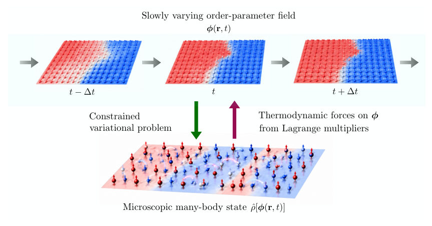
<figcaption class="paper-figure-caption"><b>Fig 1.</b> FIG. 1. Schematic of the Adiabatic Variational Principle (AVP). In analogy with the Born–Oppenheimer separation of slow and fast degrees of freedom, a slowly evolving order-parameter field ϕ(r, t) defines, at each instant, a constrained microscopic many- body state ˆρ[ϕ]. Here, however, the slow variable is an emergent collective observable rather than an independent microscopic coordinate. The associated Lagrange multipliers provide the thermodynamic forces that drive the collective evolution, while the microscopic state follows the changing order-parameter configuration adiabatically.</figcaption>
</figure>
<figure class="paper-figure-card">
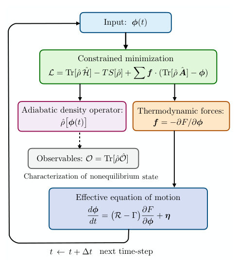
<figcaption class="paper-figure-caption"><b>Fig 2.</b> FIG. 2. Schematic illustration of adiabatic dynamics based on the AVP. For a given instantaneous configuration of the slow order parameters, the constrained variational problem determines the corresponding adiabatic microscopic state and the conjugate thermodynamic forces. The resulting state also provides the expectation values of microscopic observables characterizing the nonequilibrium system. The effective equa- tion of motion, including both reversible and dissipative con- tributions, then advances the order parameters to the next time step. Repeating these two steps generates the coupled evolution of the slow collective variables and the microscopic many-body state.</figcaption>
</figure>
<figure class="paper-figure-card">
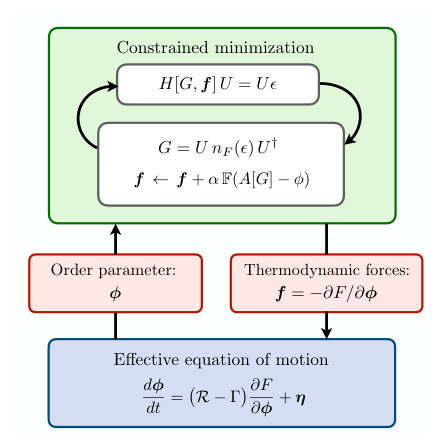
<figcaption class="paper-figure-caption"><b>Fig 3.</b> FIG. 3. Schematic of the MF-AVP workflow. For a pre- scribed order-parameter configuration ϕ, the inner loop deter- mines the single-particle density matrix G and the Lagrange multipliers f enforcing the constraints. The map F converts constraint residuals A[G] −ϕ into corrections to f and de- pends on the numerical implementation. At convergence, the multipliers provide the thermodynamic forces f = −∂F/∂ϕ used to advance ϕ in the outer dynamical loop.</figcaption>
</figure>
<figure class="paper-figure-card">
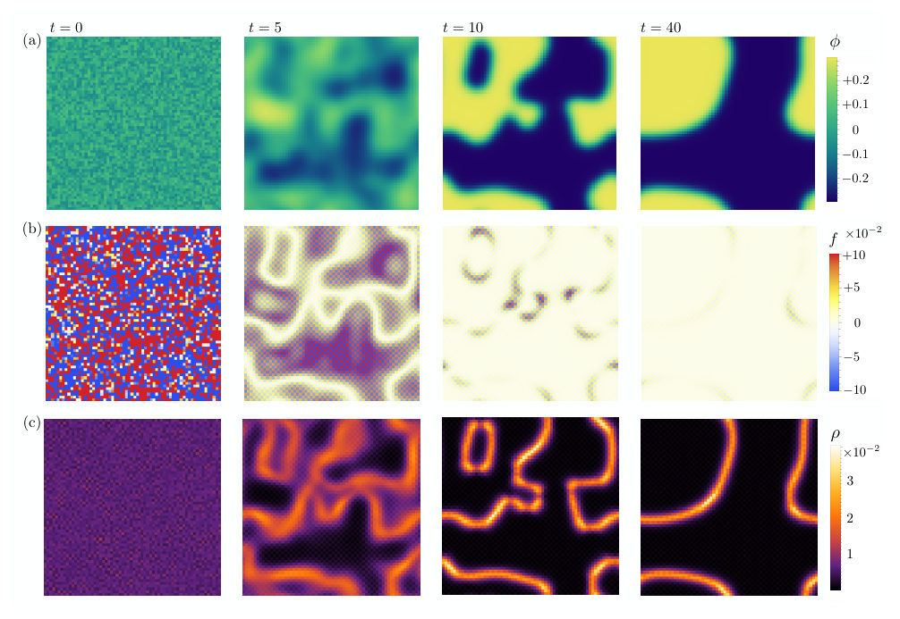
<figcaption class="paper-figure-caption"><b>Fig 4.</b> FIG. 4. Coarsening dynamics of the charge-density-wave state in the square-lattice t–V model. The columns show snapshots at t = 0, 5, 10, and 40, with time measured in units of (Γtnn)−1, where Γ is the dissipative coefficient in Eq. (49). (a) Local checkerboard order parameter ϕi defined in Eq. (46), showing the formation and coarsening of domains whose opposite signs distinguish the two symmetry-related checkerboard states. (b) Conjugate thermodynamic force fi associated with the dynamical density variable ni. (c) Local density of states ρi near the Fermi energy, evaluated from the instantaneous constrained mean-field Hamiltonian.</figcaption>
</figure>
<figure class="paper-figure-card">
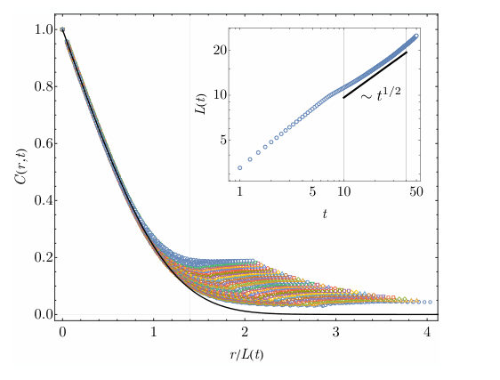
<figcaption class="paper-figure-caption"><b>Fig 5.</b> FIG. 5. Dynamical scaling of square-lattice CDW coarsen- ing. The normalized equal-time correlation function C(r, t) of the staggered CDW field is plotted against r/L(t), where C(L(t), t) = 1/2. Correlations at different times collapse at short rescaled distances, with deviations at larger distances as finite-size effects become important. The inset shows the characteristic domain size L(t), whose growth is consistent with the Allen–Cahn law L(t) ∼t1/2 over the coarsening regime.</figcaption>
</figure>
</div>

<p><strong>Summary.</strong> This paper introduces the Adiabatic Variational Principle (AVP) to derive the dynamics of emergent electronic order directly from a full many-body Hamiltonian. By assuming fast electronic relaxation relative to slow order-parameter changes, it establishes a rigorous, microscopic foundation for phase-field simulations. This framework successfully reproduces known dynamics for CDW and magnetic systems.</p>
<p><strong>Why it may be interesting.</strong> This work provides a rigorous, microscopic derivation for dynamics often modeled phenomenologically in AMO and condensed matter, connecting slow collective variables to fast quantum fluctuations.</p>
<details>
<summary>Detailed structure</summary>
<p><strong>Main problem.</strong> The paper addresses the need for a microscopic foundation to simulate the non-equilibrium dynamics of emergent electronic order, bridging the gap between fundamental many-body theory and phenomenological phase-field models.</p>
<p><strong>Main result.</strong> The Adiabatic Variational Principle (AVP) successfully derives order-parameter dynamics directly from the interacting many-body Hamiltonian, providing a solver-independent framework for such simulations.</p>
<p><strong>Method.</strong> The core method is the Adiabatic Variational Principle (AVP), which assumes the system evolves adiabatically with respect to slow order parameters, analogous to the Born-Oppenheimer approximation.</p>
<p><strong>Model / system.</strong> The study applies to correlated quantum matter exhibiting emergent electronic order, such as charge-density waves (CDW) and itinerant magnetism, starting from an interacting many-body Hamiltonian.</p>
<p><strong>Key observables.</strong> Order parameters ($\phi$), thermodynamic forces derived from Lagrange multipliers, and domain growth patterns (e.g., Allen-Cahn dynamics).</p>
<p><strong>Important parameters / regimes.</strong> The separation of time scales ($    au_{qp} \ll     au_{\phi}$) is crucial, defining the adiabatic limit.</p>
<p><strong>Assumptions / limitations.</strong> The primary assumption is that microscopic relaxation is fast compared to the evolution of the order parameter (adiabatic assumption), and the dynamics are treated in the Markovian limit.</p>
<p><strong>Figures summary.</strong> Figure 1 schematically illustrates the AVP, drawing an analogy to the Born-Oppenheimer separation where the slow order parameter defines a constrained microscopic state, and Lagrange multipliers provide the driving forces.</p>
<p><strong>Paper structure.</strong> The paper introduces the AVP framework, details its connection to Born-Oppenheimer theory, derives the equations of motion using Mori-Zwanzig theory, and applies the formalism to recover known dynamics like Allen-Cahn and Landau-Lifshitz equations.</p>
</details>
<details>
<summary>Abstract</summary>
<p>Recent advances in microscopic many-body methods have enabled increasingly accurate descriptions of equilibrium quantum states, yet large-scale simulations of emergent-order dynamics typically rely on phenomenological equations with prescribed free-energy functionals. We introduce the Adiabatic Variational Principle (AVP), a framework for deriving order-parameter dynamics directly from an interacting many-body Hamiltonian. When microscopic relaxation is fast compared with order-parameter evolution, the many-body state follows the collective configuration adiabatically, in analogy with the Born--Oppenheimer separation of electronic and nuclear motion. This assumption makes explicit the adiabatic closure implicit in conventional phase-field descriptions. Each instantaneous order-parameter configuration then defines a constrained quasi-stationary many-body state, and the Lagrange multipliers enforcing these constraints directly provide the thermodynamic forces driving the collective evolution. Nonlinear Mori--Zwanzig projection theory further connects the reversible dynamics to the microscopic algebra of the collective variables and relates dissipation and fluctuations to the eliminated degrees of freedom. Applications to charge- and spin-density-wave dynamics recover Allen--Cahn domain growth, resolve evolving domain networks together with their microscopic electronic structure, and yield generalized Landau--Lifshitz dynamics for itinerant magnetism. The AVP thus provides a solver-independent microscopic foundation for phase-field-like simulations of the nonequilibrium dynamics of emergent electronic order.</p>
</details>
<p><sub><a href="#top">↑ back to top</a></sub></p>

<p><a id="paper-2610.39703"></a></p>
<h3 id="computing-with-coupled-oscillator-networks-optimization-memory-and-modern-ai-primitives"><a href="http://arxiv.org/abs/2610.39703v1">Computing with Coupled Oscillator Networks: Optimization, Memory, and Modern AI Primitives</a></h3>
<p><strong>Authors:</strong> Ahmed Allibhoy, Fabio Pasqualetti<br>
<strong>Type:</strong> theory · <strong>Category:</strong> disordered systems and neural networks · <strong>PDF:</strong> <a href="https://arxiv.org/pdf/2610.39703v1">https://arxiv.org/pdf/2610.39703v1</a><br>
<strong>Analysis basis:</strong> full PDF text, analyzed in chunks
<strong>Topic relevance:</strong> <code>analog quantum simulation</code> <strong>2/5</strong> · <code>Frenkel-Kontorova</code> <strong>1/5</strong> · <code>driven-dissipative phase transition</code> <strong>1/5</strong> · <code>methods for driven-dissipative</code> <strong>1/5</strong> · <code>non-equilibrium universality</code> <strong>1/5</strong></p>
<div class="figure-strip-hint">↔ Scroll figures horizontally</div>
<div class="paper-figures-scroll">
<figure class="paper-figure-card">
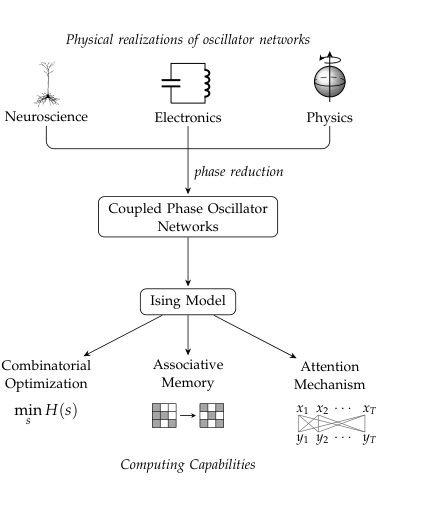
<figcaption class="paper-figure-caption"><b>Fig 1.</b> FIGURE 1 Overview of relationships between various concepts introduced in this survey. Phase reduction theory connects mathe- matical descriptions of a variety of physical realizations of oscillator networks to universal coupled phase oscillator models. The Ising model provides a bridge between coupled oscillator networks and their computing capabilities.</figcaption>
</figure>
<figure class="paper-figure-card">
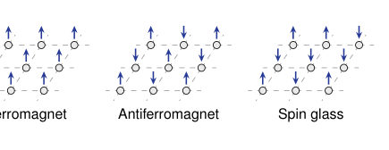
<figcaption class="paper-figure-caption"><b>Fig 2.</b> FIGURE 2 Types of ordering of spin configurations. Spins are aligned in the same direction in a ferromagnet, aligned in alternating directions in an antiferromagnet, and disordered in a spin glass.</figcaption>
</figure>
<figure class="paper-figure-card">
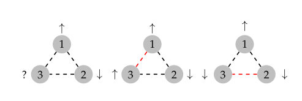
<figcaption class="paper-figure-caption"><b>Fig 3.</b> FIGURE 3 Example of a frustrated network with antiferromagnetic interactions (depicted by dashed lines) between nodes, where for any spin configuration there exists a pair of adjacent nodes with aligned spins.</figcaption>
</figure>
<figure class="paper-figure-card">
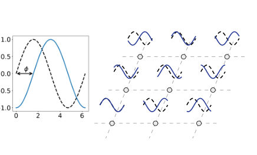
<figcaption class="paper-figure-caption"><b>Fig 4.</b> FIGURE 4 (Left) The blue waveform has phase shift ϕ relative to the reference waveform depicted in black. (Right) Network where each node is associated to a phase shifted oscillation, depicted in blue, relative to the uniform reference in black.</figcaption>
</figure>
<figure class="paper-figure-card">
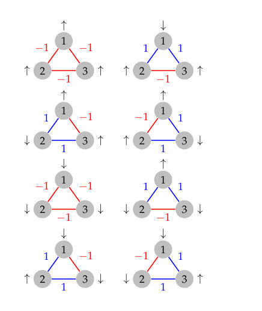
<figcaption class="paper-figure-caption"><b>Fig 5.</b> FIGURE 5 Signed graphs corresponding to spin configurations of the network J = [0, −1, −1; −1, 0, −1; −1, −1, 0]. Because the network is frustrated, no configuration results in a signed graph with only positive edges.</figcaption>
</figure>
</div>

<p><strong>Summary.</strong> This paper proposes that coupled oscillator networks offer a powerful, energy-efficient alternative to digital computers for AI tasks. It establishes a theoretical link between the system's dynamics and the Ising model, demonstrating how synchronization can solve optimization problems, store memories, and model attention. This suggests a physical realization pathway for next-generation, bio-inspired computing hardware.</p>
<p><strong>Why it may be interesting.</strong> The connection between the physics of coupled oscillators (a topic in AMO/cond-mat) and the mathematical structure of the Ising model, which is central to disordered systems, provides a rich platform for studying non-equilibrium computation.</p>
<details>
<summary>Detailed structure</summary>
<p><strong>Main problem.</strong> The paper explores using synchronization dynamics in coupled oscillator networks as an energy-efficient alternative to conventional digital computation for complex AI tasks.</p>
<p><strong>Main result.</strong> These oscillator networks can be shown to implement fundamental computational primitives, including solving NP-hard optimization problems, acting as associative memory, and dynamically modeling the attention mechanism.</p>
<p><strong>Method.</strong> The theoretical framework maps the dynamics of coupled oscillators onto an energy minimization problem governed by an Ising-like Hamiltonian.</p>
<p><strong>Model / system.</strong> The core model is the coupled oscillator network, whose dynamics are mathematically related to the Ising model via the XY-model energy function. This allows the system to encode computation in its stable synchronization patterns.</p>
<p><strong>Key observables.</strong> Synchronization patterns, phase evolution, energy efficiency, and the successful realization of computational primitives (optimization, memory retrieval, attention alignment).</p>
<p><strong>Important parameters / regimes.</strong> The coupling strengths (J_ij), external fields (h_i), and the effective temperature/inverse temperature parameter ($eta$) governing the system's state.</p>
<p><strong>Assumptions / limitations.</strong> The primary assumption is that the continuous, analog nature of oscillator dynamics provides a more energy-efficient and biologically plausible computing paradigm than current digital simulations.</p>
<p><strong>Figures summary.</strong> Figures illustrate the conceptual link between coupled oscillator networks, the Ising Model, and the three target computational primitives: optimization, memory, and attention.</p>
<p><strong>Paper structure.</strong> The paper establishes the motivation by contrasting oscillator computing with digital limitations, develops the theoretical bridge using the Ising/XY model, and then systematically discusses the implementation of optimization, memory, and attention using this framework.</p>
</details>
<details>
<summary>Abstract</summary>
<p>We explore how synchronization in coupled oscillator networks may be employed to perform a variety of computing tasks. These systems are becoming more attractive as an alternative to conventional digital computers due to the increasing energy demands of the latter, particularly for large-scale problems in machine learning and artificial intelligence. The ubiquity of coupled oscillator networks means that oscillator-based computing can be thought of as a universal computing paradigm encompassing systems with a diversity of physical realizations, e.g. as analog circuits, neurological systems, spintronic systems. The bridge between the dynamics of coupled oscillator networks and computational primitives they implement is the Ising model, which originates in statistical physics, and when applied to oscillator networks, explains the emergence of globally complex and disordered synchronization patterns from local interactions in the network. We discuss the application of coupled oscillator networks to three fundamental computing operations. First, oscillator networks as specialized hardware solvers of NP-hard combinatorial optimization problems, with the solution encoded in the synchrony patterns. Second, oscillator networks as associative memory systems, enabling storage and retrieval of data represented through phases of oscillations. Finally, oscillator networks as a dynamical implementation of attention, with synchronization providing the mechanism for the alignment of keys to queries. The ability of oscillator networks to implement these computational primitives paves the way for novel realizations of intelligent systems through a variety of physical substrates.</p>
</details>
<p><sub><a href="#top">↑ back to top</a></sub></p>

<p><a id="paper-2610.40072"></a></p>
<h3 id="dissipative-controller-as-a-hidden-source-of-errors-in-quantum-gates"><a href="http://arxiv.org/abs/2610.40072v1">Dissipative controller as a hidden source of errors in quantum gates</a></h3>
<p><strong>Authors:</strong> Serhat C. Kadıoğlu, Saulo V. Moreira, Mark T. Mitchison, Anthony Kiely<br>
<strong>Type:</strong> theory · <strong>Category:</strong> statistical mechanics · <strong>PDF:</strong> <a href="https://arxiv.org/pdf/2610.40072v1">https://arxiv.org/pdf/2610.40072v1</a><br>
<strong>Analysis basis:</strong> full PDF text, analyzed in chunks
<strong>Topic relevance:</strong> <code>quantum measurements</code> <strong>2/5</strong> · <code>Keldysh / 2PI / non-Gaussian methods</code> <strong>1/5</strong> · <code>correlated / nonlocal dissipation</code> <strong>1/5</strong> · <code>driven-dissipative phase transition</code> <strong>1/5</strong> · <code>methods for driven-dissipative</code> <strong>1/5</strong></p>
<div class="figure-strip-hint">↔ Scroll figures horizontally</div>
<div class="paper-figures-scroll">
<figure class="paper-figure-card">
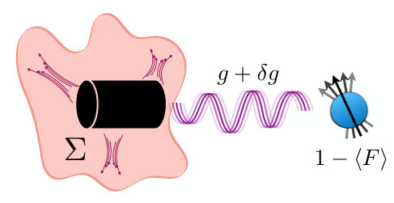
<figcaption class="paper-figure-caption"><b>Fig 1.</b> FIG. 1. Schematic of setting considered. Classical control ap- paratus (black cylinder) dissipates into a surrounding thermal environment (red), quantified by the entropy production Σ. It is also used to generate the control field g (purple lines), which has fluctuations δg. These fluctuations lead to aver- age infidelity χ ≈1 −⟨F⟩in the controlled quantum system (blue). The broad goal is to understand the interplay between Σ and χ.</figcaption>
</figure>
<figure class="paper-figure-card">
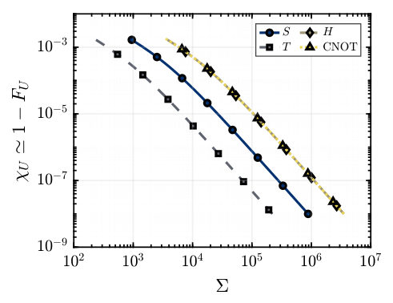
<figcaption class="paper-figure-caption"><b>Fig 2.</b> FIG. 2. Gate infidelity χU ≃1 −FU as a function of the dis- sipative cost Σ for the gates {S, T, H, CNOT}. The points along each curve are generated by varying τ/τc. Shorter durations correspond to larger dissipative costs and smaller gate susceptibilities. At a fixed duration, the gates share the same normalized susceptibility, while their energetic costs dif- fer through the rotation angle θ. For visual clarity, markers are displayed only for a subset of the calculated points. The connecting lines represent the complete numerical dataset and are not fitted curves.</figcaption>
</figure>
<figure class="paper-figure-card">

<figcaption class="paper-figure-caption"><b>Fig 3.</b> FIG. 3. The fidelity susceptibility χS versus γ and 1/τc. The results are calculated with a 5th order polynomial ramp control. The white dashed line represents the perturbative boundary τ 2γ/τc &lt; 10−2.</figcaption>
</figure>
<figure class="paper-figure-card">
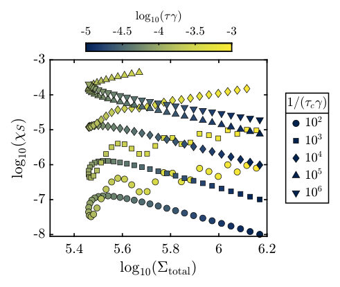
<figcaption class="paper-figure-caption"><b>Fig 4.</b> FIG. 4. Scatter plot of infidelity χS vs energetic cost Σtotal. Marker colour shows the operation time τ, and different in- verse noise correlation times 1/τc are represented by markers shown in legend. The data presented is cut-off for τ values not satisfying the perturbative boundary condition.</figcaption>
</figure>
<figure class="paper-figure-card">
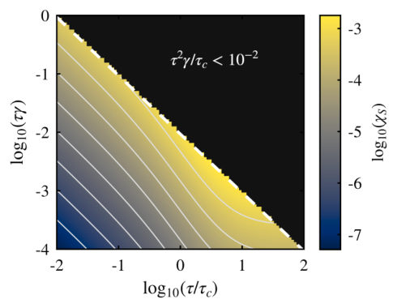
<figcaption class="paper-figure-caption"><b>Fig 5.</b> Figure 3 shows the dependence of the error χS on the correlation time τc and the noise strength γ. The dashed line indicates the threshold τ 2γ/τc = 10−2, with the re- gion satisfying τ 2γ/τc &lt; 10−2 corresponding to the per- turbative regime. Note that Eq. (9) still emerges as the condition for validity of our perturbative noise treatment, as can be seen by comparing the fluctuations to the maxi- mum intensity of the counterdiabatic field GCD. We again use a fifth-order polynomial ramp for g(t). In Fig. 4, we show a log-scale scatter plot of χS versus the energy cost of the control Σtotal. We can see two dis- tinct regimes, depending on the duration of the protocol. For short protocol...</figcaption>
</figure>
</div>

<p><strong>Summary.</strong> This paper establishes a fundamental thermodynamic trade-off in quantum control, showing that reducing errors in quantum gates requires accepting a corresponding level of energy dissipation in the classical control electronics. By analyzing the relationship between gate fidelity susceptibility and entropy production, it provides quantitative bounds for designing energy-efficient and high-fidelity quantum operations.</p>
<p><strong>Why it may be interesting.</strong> This work directly addresses the thermodynamic constraints on quantum computation, providing a quantitative link between the energy cost (dissipation) and the achievable fidelity of quantum gates, which is crucial for designing practical quantum hardware.</p>
<details>
<summary>Detailed structure</summary>
<p><strong>Main problem.</strong> The paper investigates the fundamental trade-off between minimizing quantum gate errors and managing the unavoidable energy dissipation generated by the classical control apparatus.</p>
<p><strong>Main result.</strong> It quantitatively demonstrates that suppressing quantum errors in control protocols necessarily incurs a cost in macroscopic dissipation within the classical controller.</p>
<p><strong>Method.</strong> The analysis uses second-order perturbative corrections to calculate gate fidelity susceptibility ($\chi$) and relates this error measure to the irreversible entropy production ($\Sigma$) of the classical circuit.</p>
<p><strong>Model / system.</strong> The system involves a quantum processor controlled by classical devices modeled as dissipative RL circuits. The Hamiltonian is time-dependent and perturbed by noise ($\delta g(t)$) originating from the controller's fluctuations.</p>
<p><strong>Key observables.</strong> Gate fidelity susceptibility ($\chi$), Entropy Production ($\Sigma$), and the trade-off relationship between them.</p>
<p><strong>Important parameters / regimes.</strong> Fast control regimes, high fidelity requirements, and the ratio of protocol time ($ au$) to noise correlation time ($   au_c$).</p>
<p><strong>Assumptions / limitations.</strong> The classical controller is treated as a dissipative system, and the error analysis relies on perturbative approximations valid under specific time/field strength conditions.</p>
<p><strong>Figures summary.</strong> Figures illustrate the schematic relationship between dissipation ($\Sigma$), noise ($\delta g$), and resulting infidelity ($\chi$) in the quantum system, and compare gate infidelity vs. dissipative cost for various gates.</p>
<p><strong>Paper structure.</strong> The paper develops the theoretical framework by modeling the noise source, deriving the susceptibility $\chi$ from noise correlations, and then establishing the quantitative trade-off inequality linking $\chi$ and $\Sigma$ across various quantum control protocols.</p>
</details>
<details>
<summary>Abstract</summary>
<p>Quantum systems are typically controlled by classical devices that necessarily dissipate energy to the surrounding environment. By the fluctuation-dissipation theorem, this implies noise in the control field produced. We investigate the relationship between the resulting errors and the entropy produced by the macroscopic controller, working in the context of a concrete minimal model. In the most experimentally relevant regime of fast control and high fidelity, we find a tradeoff between dissipation and control errors. These findings are exemplified by perturbative calculations of the gate fidelity for simple gate implementations and of the fidelity of state transfer via shortcuts to adiabaticity in the Landau-Zener model. Our results quantitatively demonstrate that suppressing errors in quantum control typically comes at the cost of macroscopic dissipation, which is needed to tame fluctuations in the classical controller.</p>
</details>
<p><sub><a href="#top">↑ back to top</a></sub></p>

<p><a id="paper-2610.38707"></a></p>
<h3 id="quenched-thermodynamics-from-ancilla-assisted-imaginary-time-evolution"><a href="http://arxiv.org/abs/2610.38707v1">Quenched Thermodynamics from Ancilla-Assisted Imaginary-Time Evolution</a></h3>
<p><strong>Authors:</strong> Ibukunoluwa Adisa, Daniele Cuomo<br>
<strong>Type:</strong> theory · <strong>Category:</strong> statistical mechanics · <strong>PDF:</strong> <a href="https://arxiv.org/pdf/2610.38707v1">https://arxiv.org/pdf/2610.38707v1</a><br>
<strong>Analysis basis:</strong> full PDF text, analyzed in chunks
<strong>Topic relevance:</strong> <code>Keldysh / 2PI / non-Gaussian methods</code> <strong>2/5</strong> · <code>quantum measurements</code> <strong>2/5</strong> · <code>analog quantum simulation</code> <strong>1/5</strong> · <code>methods for driven-dissipative</code> <strong>1/5</strong></p>
<div class="figure-strip-hint">↔ Scroll figures horizontally</div>
<div class="paper-figures-scroll">
<figure class="paper-figure-card">
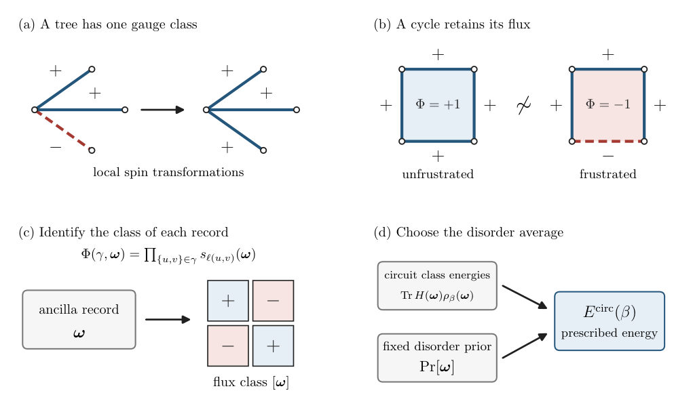
<figcaption class="paper-figure-caption"><b>Fig 1.</b> Figure 1. Using ancilla records to reconstruct disorder averages. (a) On a tree, local spin transformations make all bond signs positive. (b) On a square loop, the sign product Φ survives these transformations. Φ = +1 and −1 distinguish unfrustrated and frustrated configurations. (c) Multiplying the recorded bond signs around each plaquette gives Φ(γ, ω) and identifies the flux class [ω]. (d) The class-conditioned circuit energies Tr H(ω)ρβ(ω), combined with the fixed disorder prior Pr[ω], give Ecirc(β). Finite-shot measurements estimate this quantity as Eshot(β) and replacing the circuit energies by Gibbs expectations gives the target E(β). Integrating the prescribed circuit average over...</figcaption>
</figure>
<figure class="paper-figure-card">
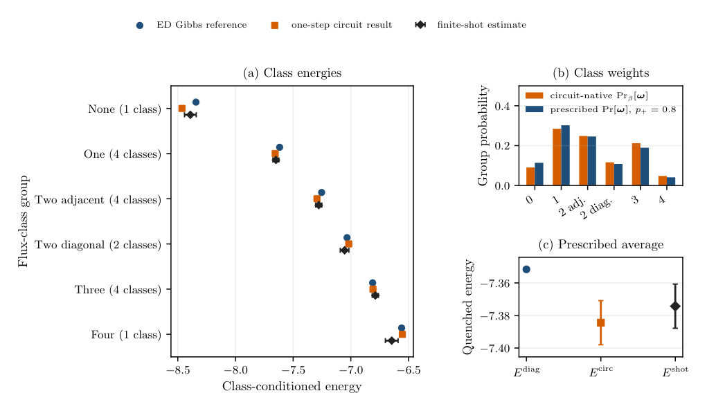
<figcaption class="paper-figure-caption"><b>Fig 2.</b> Figure 2. Reconstruction of the prescribed energy on the open 3 × 3 lattice at β = 0.75. (a) Gibbs class energies from exact diagonalization (ED), exact conditional expectations of the one-step circuit, and finite-shot estimates, grouped by rotations and reflections of the square lattice. The labels specify the number and arrangement of frustrated plaquettes, for which Φ = −1. “None” means that all four plaquettes are unfrustrated, while “Two adjacent” and “Two diagonal” distinguish the two arrangements of two frustrated plaquettes (Fig. 9). Parentheses give the number of distinct flux classes in each symmetry group. For the uniform couplings and circuit ordering used here, symmetry-related...</figcaption>
</figure>
<figure class="paper-figure-card">
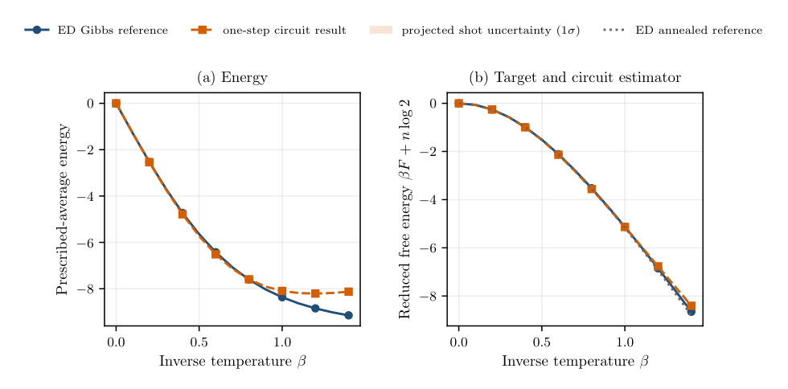
<figcaption class="paper-figure-caption"><b>Fig 3.</b> Figure 3. Quenched free energy from thermodynamic integration for the fixed prior p+ = 0.8. (a) Gibbs energies Ediag(β) and exact one-step circuit energies Ecirc(β), averaged with the same prescribed class weights Pr[ω]. (b) The corresponding reduced free energies βF diag + n log 2 and βF circ + n log 2, together with the ED annealed reference β eF + n log 2. The circuit curve is obtained by Simpson integration on fifteen inverse-temperature points, with markers displayed at every second point. The bands show the projected one-standard-error sampling uncertainty for the prescription in Appendix D 1, propagated through the integral in panel (b). The central circuit curves are calculated from...</figcaption>
</figure>
<figure class="paper-figure-card">
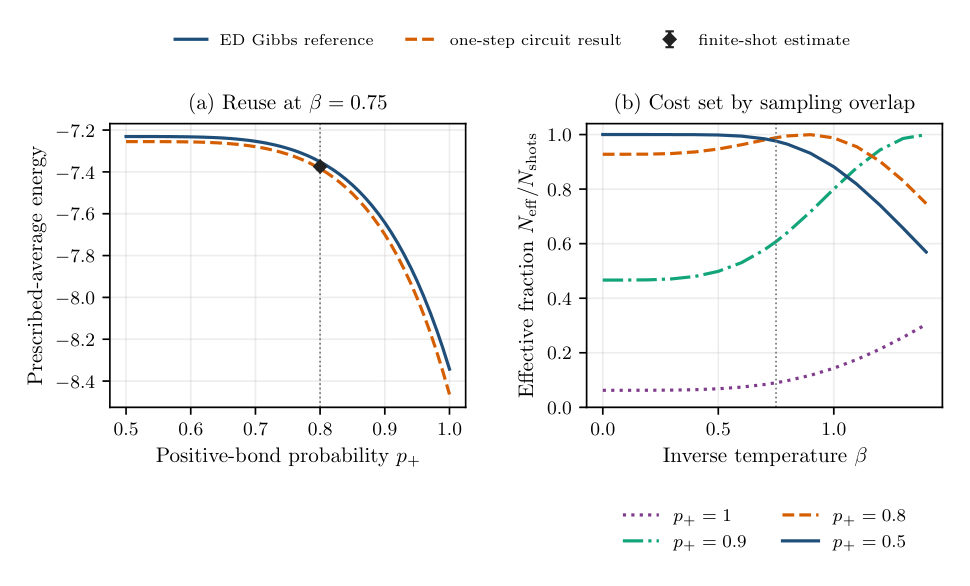
<figcaption class="paper-figure-caption"><b>Fig 4.</b> Figure 6. Reuse of resolved class data and its sampling cost. (a) The same Gibbs and exact one-step circuit class energies at β = 0.75 give Ediag and Ecirc for each displayed positive-bond probability p+. The finite-shot point is Eshot at the production choice p+ = 0.8, with one estimated standard error. (b) The nominal effective fraction Neff/Nshots from Eq. (C5), evaluated using Pr[ω] and Prβ[ω], for the four fixed priors p+ = 1, 0.9, 0.8, 0.5. The vertical dotted line marks β = 0.75. This fraction measures distribution overlap. The variance of an energy estimate also depends on the class-conditioned measurement fluctuations.</figcaption>
</figure>
<figure class="paper-figure-card">
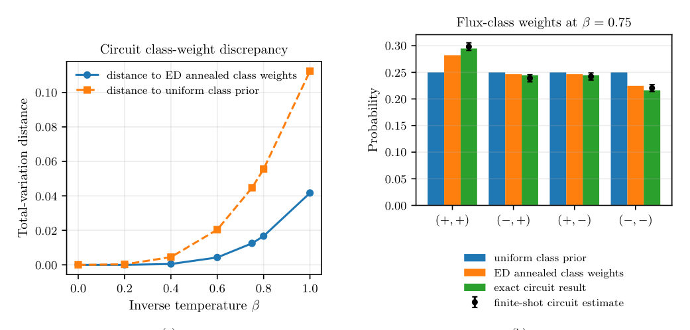
<figcaption class="paper-figure-caption"><b>Fig 5.</b> Figure 7. Circuit sampling probabilities on the open 2 × 3 lattice. (a) Total-variation distances between the exact circuit class probabilities Prβ[ω] and, respectively, the ED extended-Gibbs class weights and the uniform class prior. The extended-Gibbs weights are P</figcaption>
</figure>
</div>

<p><strong>Summary.</strong> This paper presents a quantum algorithm to calculate quenched disorder averages for models like the transverse-field Ising model. It uses ancilla-assisted imaginary-time evolution, where the measurement record helps classify the disorder configuration into gauge classes. This allows for the estimation of quenched free energies, providing access to complex disordered systems otherwise inaccessible to current methods.</p>
<p><strong>Why it may be interesting.</strong> The technique provides a powerful quantum simulation tool to probe complex, disordered many-body physics (like spin glasses) that are analytically or numerically intractable, bridging quantum computation with advanced statistical mechanics.</p>
<details>
<summary>Detailed structure</summary>
<p><strong>Main problem.</strong> The paper addresses the generally intractable problem of calculating quenched disorder averages in quantum systems, particularly for the transverse-field Ising model.</p>
<p><strong>Main result.</strong> They successfully provide a quantum algorithm to estimate these disorder averages and free energies by leveraging ancilla-assisted imaginary-time evolution.</p>
<p><strong>Method.</strong> The core method involves preparing approximate Gibbs states via imaginary-time evolution and using the measurement record to identify and weight contributions from distinct gauge classes.</p>
<p><strong>Model / system.</strong> The study focuses on the transverse-field Ising model on a lattice, whose disorder is encoded in the signs of the coupling constants ($s_\ell(u,v)$). The physics is characterized by gauge classes determined by the magnetic flux ($\Phi$) around lattice loops.</p>
<p><strong>Key observables.</strong> Quenched disorder averages, quenched free energy ($F(eta)$), class-conditioned energy estimates ($\langle H(\omega) 
angle_eta$), and the difference between quenched and annealed free energies.</p>
<p><strong>Important parameters / regimes.</strong> Inverse temperature ($eta$), lattice size ($3	imes3$ lattice used for validation), and the disorder distribution ($ ext{Pr}[\omega]$).</p>
<p><strong>Assumptions / limitations.</strong> The method relies on the measurement record accurately identifying the gauge class, and approximations are made regarding the finite-step nature of the imaginary-time evolution circuit.</p>
<p><strong>Figures summary.</strong> Figures illustrate the process of identifying flux classes via plaquette products, comparing calculated class energies (ED vs. circuit estimates), and showing the reconstruction of quenched energy on open lattices.</p>
<p><strong>Paper structure.</strong> The paper develops the theoretical framework for quenched averages, details the quantum algorithmic implementation using ancilla-assisted evolution, validates the method on small lattices, and compares the resulting quenched free energy estimates against exact diagonalization results.</p>
</details>
<details>
<summary>Abstract</summary>
<p>Quenched thermodynamics combines the equilibrium physics of fixed coupling configurations with a prescribed distribution of disorder. Problems related to quenched thermodynamics are generally intractable to approximate. We provide a quantum algorithm to calculate quenched disorder averages for the transverse-field Ising model, whose coupling configurations are organized into gauge classes. We show how to estimate these averages by preparing approximate Gibbs states through ancilla-assisted imaginary-time evolution. At each measurement, the ancilla record identifies the gauge class to which the energy estimate contributes.   We validate our framework through an open $3\times3$ lattice. A one-step circuit resolves all sixteen flux classes, and a finite-shot calculation estimates the quenched energy for independently distributed bond signs. Thermodynamic integration extends the reconstruction to a quenched free-energy estimate, while comparison with exact diagonalization identifies the finite-step approximation as the dominant source of error. This use of the measurement record provides access to the thermodynamics of frustrated spin systems with a disorder distribution chosen independently of the circuit's sampling frequencies.</p>
</details>
<p><sub><a href="#top">↑ back to top</a></sub></p>

<p><a id="paper-2610.39081"></a></p>
<h3 id="a-rhombic-spin-1-interpretation-of-a-room-temperature-gan-emitter"><a href="http://arxiv.org/abs/2610.39081v1">A rhombic spin-1 interpretation of a room-temperature GaN emitter</a></h3>
<p><strong>Authors:</strong> Daniel Hashemi<br>
<strong>Type:</strong> both · <strong>Category:</strong> other · <strong>PDF:</strong> <a href="https://arxiv.org/pdf/2610.39081v1">https://arxiv.org/pdf/2610.39081v1</a><br>
<strong>Analysis basis:</strong> full PDF text, analyzed in chunks
<strong>Topic relevance:</strong> <code>quantum measurements</code> <strong>2/5</strong> · <code>QC/QI experiment</code> <strong>1/5</strong> · <code>analog quantum simulation</code> <strong>1/5</strong> · <code>quantum optics experiment</code> <strong>1/5</strong></p>
<div class="figure-strip-hint">↔ Scroll figures horizontally</div>
<div class="paper-figures-scroll">
<figure class="paper-figure-card">
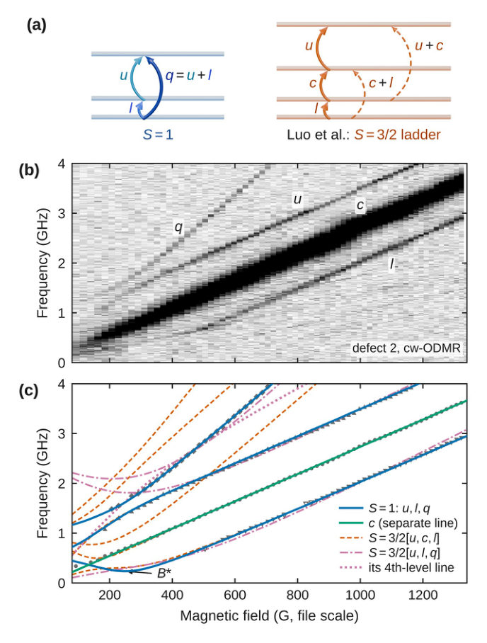
<figcaption class="paper-figure-caption"><b>Fig 1.</b> FIG. 1. (a) Level schemes at 633 G, drawn to scale. For S=1, q connects the outer levels. In the S=3 / 2 ladder of Luo et</figcaption>
</figure>
<figure class="paper-figure-card">
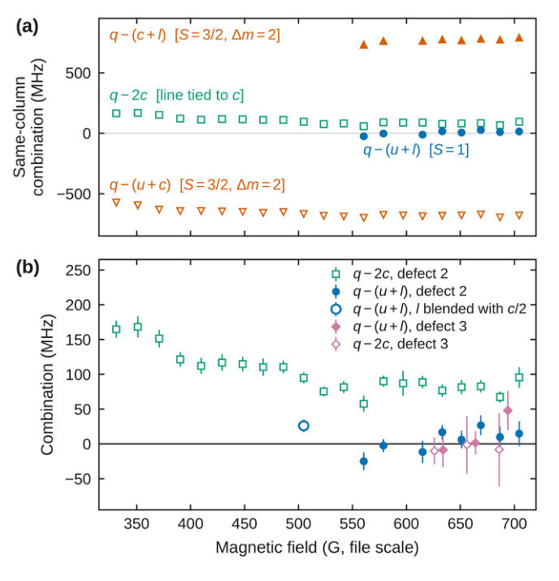
<figcaption class="paper-figure-caption"><b>Fig 2.</b> FIG. 2. The line q lies near u+l and is separated from 2c, u+c and c+l. (a) For defect 2, filled circles show q- (u+l)</figcaption>
</figure>
<figure class="paper-figure-card">

<figcaption class="paper-figure-caption"><b>Fig 3.</b> FIG. 3. (a) Positions of q in defect 2 (diamonds), compared with the S=1 prediction fitted to u and l alone (line; band gives</figcaption>
</figure>
<figure class="paper-figure-card">

<figcaption class="paper-figure-caption"><b>Fig 4.</b> FIG. 4. Zero- and weak-field predictions of the tested spin Hamiltonians. (a) Zero-field frequencies for S=1 (bands spanning</figcaption>
</figure>
</div>

<p><strong>Summary.</strong> This paper re-examines the spin structure of defects in GaN by analyzing their room-temperature ODMR spectrum. The authors argue that an $S=1$ rhombic spin model provides a superior fit to the observed spectral lines compared to the previously used $S=3/2$ model. The work is crucial for accurately characterizing solid-state quantum emitters for potential quantum applications.</p>
<p><strong>Why it may be interesting.</strong> This work is highly relevant to AMO physics and quantum optics as it deals with characterizing the spin Hamiltonian and energy levels of solid-state quantum emitters, which are foundational components for solid-state qubits.</p>
<details>
<summary>Detailed structure</summary>
<p><strong>Main problem.</strong> The paper aims to correctly interpret the optically detected magnetic resonance (ODMR) spectrum of single defects in GaN, specifically resolving the origin of an unexplained fourth spectral line ($q$).</p>
<p><strong>Main result.</strong> The authors argue that a rhombic $S=1$ spin model successfully reproduces the positions of the three main lines ($u, c, l$) and the fourth line ($q$) with high accuracy, while the standard $S=3/2$ model fails to account for the observed spectral pattern.</p>
<p><strong>Method.</strong> The study combines experimental analysis of ODMR data with theoretical fitting procedures, comparing predictions from different spin Hamiltonians ($S=1$ vs. $S=3/2$) against measured line positions.</p>
<p><strong>Model / system.</strong> The system is single defects in GaN, modeled using spin Hamiltonians, primarily comparing an $S=1$ rhombic model against a minimal $S=3/2$ model. The Hamiltonian includes terms for zero-field splitting ($D', E$) and Zeeman coupling.</p>
<p><strong>Key observables.</strong> The relative positions of four spectral lines ($u, c, l, q$), and the comparison of predicted line shifts (e.g., $q$ vs. $u+l$ or $2c$).</p>
<p><strong>Important parameters / regimes.</strong> Room temperature operation, specific energy splittings derived from the spin Hamiltonian parameters ($D', E$), and the required magnetic field sweeps.</p>
<p><strong>Assumptions / limitations.</strong> The primary assumption is that the observed spectral features can be uniquely assigned to a specific spin manifold ($S=1$ or $S=3/2$), though the authors acknowledge data limitations.</p>
<p><strong>Figures summary.</strong> Figures illustrate the level schemes for $S=1$ versus $S=3/2$ and compare the relative positions of the fourth line ($q$) against predictions from various models, including $u+l$ and $2c$.</p>
<p><strong>Paper structure.</strong> The paper analyzes the ODMR spectrum, first testing the established $S=3/2$ model against the unexplained line $q$. It then proposes and tests the $S=1$ rhombic model, concluding with suggestions for future zero-field measurements to confirm the $S=1$ assignment.</p>
</details>
<details>
<summary>Abstract</summary>
<p>Single defects in GaN show optically detected magnetic resonance at room temperature. In the more abundant class, a minimal $S=3/2$ model leaves a $g\approx 4$ line unexplained. For one defect, this line lies near the sum of the two outer lines, consistent with transitions among three shared levels. A rhombic $S=1$ model reproduces the three line positions with rms errors of 8.1-9.8 MHz. The tested second-order $S=3/2$ fits containing all three transitions and the published minimal model do not reproduce these positions. A ladder fitted to the strong lines remains viable if the $g\approx 4$ line is a separate transition near the sum of the outer two. An unresolved frequency-window shift prevents the existing data from establishing the $S=1$ assignment uniquely. We propose a zero-field sweep that directly tests the isolated $S=1$ assignment.</p>
</details>
<p><sub><a href="#top">↑ back to top</a></sub></p>

<p><a id="paper-2610.39970"></a></p>
<h3 id="bath-state-independence-of-non-markovianity-measures-in-quadratic-open-systems"><a href="http://arxiv.org/abs/2610.39970v1">Bath-state (In)dependence of Non-Markovianity Measures in Quadratic Open Systems</a></h3>
<p><strong>Authors:</strong> Mirko Consiglio, Ilia Khomchenko, Tony J. G. Apollaro<br>
<strong>Type:</strong> theory · <strong>Category:</strong> other · <strong>PDF:</strong> <a href="https://arxiv.org/pdf/2610.39970v1">https://arxiv.org/pdf/2610.39970v1</a><br>
<strong>Analysis basis:</strong> full PDF text, analyzed in chunks
<strong>Topic relevance:</strong> <code>methods for driven-dissipative</code> <strong>2/5</strong> · <code>Keldysh / 2PI / non-Gaussian methods</code> <strong>1/5</strong> · <code>correlated / nonlocal dissipation</code> <strong>1/5</strong> · <code>driven-dissipative phase transition</code> <strong>1/5</strong></p>
<div class="figure-strip-hint">↔ Scroll figures horizontally</div>
<div class="paper-figures-scroll">
<figure class="paper-figure-card">

<figcaption class="paper-figure-caption"><b>Fig 1.</b> FIG. 1. Quadratic system–bath model of Sec. II. A sin- gle fermionic site ˆd, with empty and occupied states |0⟩and |1⟩, is coupled to a reservoir of K sites ˆck; system, reservoir and coupling together form an arbitrary quadratic Hamilto- nian (4), with normal terms Uij (solid lines) and pairing terms Vij (dashed), ˆfi ∈{ ˆd, ˆc1, . . . , ˆcK}. System and reservoir start uncorrelated, and the reservoir state ˆρB need only be parity even, for instance a Gibbs state at inverse temperature β and chemical potential µ.</figcaption>
</figure>
<figure class="paper-figure-card">

<figcaption class="paper-figure-caption"><b>Fig 2.</b> FIG. 2. A single fermionic site with on-site energy E, cou- pled to a reservoir modeled as a semi-infinite spin chain. The system–reservoir coupling has strength √</figcaption>
</figure>
<figure class="paper-figure-card">

<figcaption class="paper-figure-caption"><b>Fig 3.</b> FIG. 3. (a) Propagator and canonical rates for E = 2Ω, Γ = Ω/2 at T = Ω, shown to Ωt = 40; the measures in (b) are integrated over the full window Ωtmax = 320 (nt = 32001). Shading marks the intervals with γ(t) &lt; 0, on which |G(t)| rises and backflow accumulates, and the dotted line is the bound-state residue Rb; here mint |G(t)| = 0.941. (b) The five measures of Sec. II A against reservoir temperature at the same parameters. NBLP and NLPP are independent of T, as Theorem 1 requires, while the other three vary by 11–60%. Inset: deviation of NBLP and NLPP from their lowest-temperature values; note the 10−16</figcaption>
</figure>
<figure class="paper-figure-card">

<figcaption class="paper-figure-caption"><b>Fig 4.</b> FIG. 4. As Fig. 3, for E = Ω/2, Γ = Ωwith panel (a) at T = 0.02Ω. This point lies on the bound-state threshold |E| = Ω−Γ/2, where |G(t)| ∼t−1/2 and mint |G(t)| = 0.126. Panel (a) is shown to Ωt = 25; the measures in (b) are integrated to Ωtmax = 40, at which they are converged here for every T &gt; 0 (see Appendix B). (a) No interval has γ(t) &lt; 0, so |G| decreases monotonically, no shading appears in the upper two panels, and NBLP = NLPP = 0 identically. The individual rate Λ+(t) nevertheless first turns negative near Ωt ≃3.1, and p</figcaption>
</figure>
<figure class="paper-figure-card">

<figcaption class="paper-figure-caption"><b>Fig 5.</b> FIG. 5. As Fig. 3, for E = Γ = Ω/2, below the bound-state threshold (Ec = 0.75Ωfor this Γ), with panel (a) at T = 0.02Ω and the measures in (b) integrated to Ωtmax = 40. (a) |G(t)| decays through the band, with mint |G(t)| = 0.006. From Ωt ≃20 the two band edges beat at frequency 2Ω: γ(t) and both rates Λ±(t) turn negative once per period (gray shading), and p</figcaption>
</figure>
</div>

<p><strong>Summary.</strong> This paper analyzes non-Markovianity in a fermionic quadratic open quantum system to determine which diagnostic measures are robust against changes in the environment's state. It proves that two measures (BLP and LPP) are bath-state independent, while others are sensitive to the bath's temperature and chemical potential. This helps theorists select appropriate metrics for characterizing memory effects in complex quantum dynamics.</p>
<p><strong>Why it may be interesting.</strong> This work provides crucial theoretical insight into the robustness of different non-Markovianity diagnostics, distinguishing which measures are fundamentally robust (bath-independent) versus those that are highly sensitive to environmental details.</p>
<details>
<summary>Detailed structure</summary>
<p><strong>Main problem.</strong> The paper investigates the dependence of various non-Markovianity measures on the specific state of the environment (bath) in open quantum systems.</p>
<p><strong>Main result.</strong> For a fermionic quadratic open system, the BLP and LPP non-Markovianity measures are proven to be independent of the bath state, while other measures (like RHP and MSV) remain sensitive to the bath's temperature and chemical potential.</p>
<p><strong>Method.</strong> The analysis involves deriving time-local master equations for the system dynamics and applying theoretical tools to calculate and compare multiple non-Markovianity measures.</p>
<p><strong>Model / system.</strong> The model is a fermionic quadratic open quantum system consisting of a single fermionic site coupled to a reservoir of multiple sites. The dynamics are governed by a quadratic Hamiltonian, allowing for exact time-local master equation derivations.</p>
<p><strong>Key observables.</strong> Non-Markovianity measures: Breuer–Laine–Piilo (BLP), Lorenzo–Plastina–Paternostro (LPP), Rivas–Huelga–Plenio (RHP), and Megier–Smirne–Vacchini (MSV).</p>
<p><strong>Important parameters / regimes.</strong> Bath temperature ($eta$) and chemical potential ($\mu$); the system is analyzed in the context of quadratic Hamiltonians.</p>
<p><strong>Assumptions / limitations.</strong> The derivation relies on the bath state being parity-even and the system Hamiltonian being quadratic. The analysis is restricted to these specific mathematical structures.</p>
<p><strong>Figures summary.</strong> Figure 1 illustrates the quadratic system–bath model, detailing the coupling terms between the single fermionic site and the reservoir.</p>
<p><strong>Paper structure.</strong> The paper establishes the physical model, derives the time evolution equations leading to a time-local master equation, and then systematically analyzes and compares the mathematical dependence of five different non-Markovianity measures on the bath state.</p>
</details>
<details>
<summary>Abstract</summary>
<p>Open quantum system dynamics fail to fulfill the conditions of the Markov approximation when the environment and system timescales are close to each other. Such behavior of these systems can be characterized by several non-Markovianity measures, which are expected to vary with the environment parameters. In this work, we consider a fermionic quadratic open quantum system, establishing bath-state independence of the Breuer--Laine--Piilo and the Lorenzo--Plastina--Paternostro non-Markovianity measures. However, our analytical results reveal that the entanglement-based and divisibility-based Rivas--Huelga--Plenio measures, as well as the entropic Megier--Smirne--Vacchini measure, remain sensitive to the reservoir state, through both its temperature and its chemical potential. Modeling the reservoir as a free-fermionic chain, we derive an exact time-local master equation for a single fermionic site in contact with it. Our numerical results for this model confirm these findings and show that the BLP and LPP measures vanish identically only on the bound-state threshold, where the bath-sensitive measures nevertheless remain finite.</p>
</details>
<p><sub><a href="#top">↑ back to top</a></sub></p>

<p><a id="paper-2610.39568"></a></p>
<h3 id="diffusion-models-for-the-math699math-nonlinear-sigma-model"><a href="http://arxiv.org/abs/2610.39568v1">Diffusion models for the $O(3)$ nonlinear sigma model</a></h3>
<p><strong>Authors:</strong> Daniel Schubring<br>
<strong>Type:</strong> theory · <strong>Category:</strong> statistical mechanics · <strong>PDF:</strong> <a href="https://arxiv.org/pdf/2610.39568v1">https://arxiv.org/pdf/2610.39568v1</a><br>
<strong>Analysis basis:</strong> full PDF text, analyzed in chunks
<strong>Topic relevance:</strong> <code>analog quantum simulation</code> <strong>2/5</strong> · <code>methods for driven-dissipative</code> <strong>2/5</strong> · <code>Keldysh / 2PI / non-Gaussian methods</code> <strong>1/5</strong></p>
<div class="figure-strip-hint">↔ Scroll figures horizontally</div>
<div class="paper-figures-scroll">
<figure class="paper-figure-card">

<figcaption class="paper-figure-caption"><b>Fig 1.</b> Figure 1: A two-point correlation function for an O(3) model coarse-grained from a 642 lattice (β = 1.5) to a 162 lattice (black). One-parameter renormalizations of β to β′, fitting either the correlation length (blue) or the energy per site (red), are compared to the generated configurations from a diffusion model (purple). See also Table 1.</figcaption>
</figure>
<figure class="paper-figure-card">

<figcaption class="paper-figure-caption"><b>Fig 2.</b> Figure 2: Distributions of the topological charge Q (left) and the number of lattice dislocations Ndis (right) for the two-dimensional O(3) model at β = 1.5 on a 642 lattice. The equilibrium heat-bath reference (black line) is compared with 104 configurations generated by a diffusion model using 800 score evaluations (blue histogram). Systematic errors in the configurations generated by the model are largely corrected after a cheap refinement of four heat-bath sweeps (purple error bars).</figcaption>
</figure>
<figure class="paper-figure-card">

<figcaption class="paper-figure-caption"><b>Fig 3.</b> Figure 3: Editing short-distance structure with diffusion models. Configurations of classical spins are visualized by mapping spin orientations to saturated colors. An image of Seurat’s painting A Sunday Af- ternoon on the Island of La Grande Jatte is first converted to saturated colors and then to a corresponding spin configuration. A diffusion model trained on the O(3) model at β = 1.5 is then used to modify the short-distance structure in a manner consistent with the local statistics of the equilibrium field theory. At the upper right is an enlarged 642 sample of the face of the man wearing a top hat. At the lower right is a genuine equilibrium 642 configuration for comparison. The...</figcaption>
</figure>
<figure class="paper-figure-card">

<figcaption class="paper-figure-caption"><b>Fig 4.</b> Figure 4: Comparison of approximations to the scalar score ∂z log K(θ, τ), where z = cos θ. The spectral expansion with ℓmax = 10 is used at large τ, while the MPSD and boundary-layer approximations are used at small τ. These approximations are shown at the switching time τ = 0.137, alongside a higher-order spectral expansion (ℓmax = 15).</figcaption>
</figure>
<figure class="paper-figure-card">

<figcaption class="paper-figure-caption"><b>Fig 5.</b> Figure 5: Two-point correlation function C(r) on the 642 lattice. Solid lines show equilibrium correlations at diffusion times u = 0, 0.5, and 0.75, while circles show the corresponding Stein estimates (40). Diamonds show correlations measured from configurations generated by the diffusion model using 800 score evaluations.</figcaption>
</figure>
</div>

<p><strong>Summary.</strong> This work applies score-based diffusion models to simulate the 2D $O(3)$ nonlinear sigma model, a challenging system in statistical mechanics. By training these generative models on coarse-grained lattice data, the authors develop a powerful, scalable alternative to traditional MCMC sampling. The results demonstrate that diffusion models can accurately predict key physical properties, such as correlation functions and topological susceptibility, thereby advancing the field of ML-enhanced computational physics.</p>
<p><strong>Why it may be interesting.</strong> While focused on classical statistical mechanics, the methodology—using advanced generative ML models to overcome sampling bottlenecks in complex physical systems—is highly relevant to developing efficient simulation techniques for quantum many-body systems.</p>
<details>
<summary>Detailed structure</summary>
<p><strong>Main problem.</strong> The paper addresses the challenge of efficiently sampling configurations for the $O(3)$ nonlinear sigma model, which is computationally difficult using conventional Markov Chain Monte Carlo (MCMC) methods.</p>
<p><strong>Main result.</strong> The authors successfully apply score-based diffusion models to generate configurations for the model, showing that these methods can accurately reproduce key physical observables like correlation functions and topological susceptibility.</p>
<p><strong>Method.</strong> They train diffusion models on coarse-grained data from the lattice model, incorporating specialized diagnostics (Stein/Schwinger-Dyson) and handling the geometry of the $S^2$ manifold.</p>
<p><strong>Model / system.</strong> The system is the two-dimensional $O(3)$ nonlinear sigma model (classical Heisenberg model) on a lattice, which is studied in its continuum limit and on discrete lattices.</p>
<p><strong>Key observables.</strong> Two-point correlation function, magnetic susceptibility ($\chi_m$), and topological susceptibility ($\chi_t$).</p>
<p><strong>Important parameters / regimes.</strong> The coupling constant $eta$ (set to 1.5), lattice size ($64^2, 32^2, 16^2$), and correlation length scales.</p>
<p><strong>Assumptions / limitations.</strong> The primary assumptions involve the applicability of diffusion models to lattice field theories and the development of approximations for the heat kernel on $S^2$.</p>
<p><strong>Figures summary.</strong> Figures compare observables like $C(1)$, $C(32)$, $\chi_m$, and $\chi_t$ generated by diffusion models (DM16) against reference heat-bath simulations, demonstrating convergence.</p>
<p><strong>Paper structure.</strong> The paper introduces the physical model and the limitations of MCMC, details the diffusion model framework (training, multiscale approach), presents the specialized diagnostics for manifold geometry, and concludes with comparisons of key thermodynamic observables.</p>
</details>
<details>
<summary>Abstract</summary>
<p>A score-based diffusion model is trained on the two-dimensional classical Heisenberg model, the lattice representation of the $O(3)$ nonlinear sigma model. Neural networks are trained on three different coarse-grainings of the same training set to implement a multiscale sampling scheme that modestly improves both the accuracy and computational cost of direct sampling on the finest lattice. Stein (or Schwinger-Dyson) diagnostics for the two-point correlation function are introduced to assess the quality of the learned score without relying on reverse diffusion sampling. These diagnostics are also incorporated into an additional training loss. We discuss several technical considerations relevant to implementing diffusion models on $S^2$. These include a consideration of lifting the network input to $S^3$, as in the $CP^1$ representation, and developing a boundary-layer approximation to the short-time spherical heat kernel that extends its usefulness to larger diffusion times.</p>
</details>
<p><sub><a href="#top">↑ back to top</a></sub></p>

<p><a id="paper-2610.39555"></a></p>
<h3 id="edge-plasmon-induced-magnetization-in-higher-chern-insulators"><a href="http://arxiv.org/abs/2610.39555v1">Edge-Plasmon-Induced Magnetization in Higher Chern Insulators</a></h3>
<p><strong>Authors:</strong> Prathyush P. Poduval, Rofii, Muhammad S. Ukhtary, Thomas L. Schmidt, Eddwi H. Hasdeo<br>
<strong>Type:</strong> theory · <strong>Category:</strong> other · <strong>PDF:</strong> <a href="https://arxiv.org/pdf/2610.39555v1">https://arxiv.org/pdf/2610.39555v1</a><br>
<strong>Analysis basis:</strong> full PDF text, analyzed in chunks
<strong>Topic relevance:</strong> <code>Keldysh / 2PI / non-Gaussian methods</code> <strong>2/5</strong> · <code>analog quantum simulation</code> <strong>2/5</strong> · <code>methods for driven-dissipative</code> <strong>1/5</strong></p>
<div class="figure-strip-hint">↔ Scroll figures horizontally</div>
<div class="paper-figures-scroll">
<figure class="paper-figure-card">

<figcaption class="paper-figure-caption"><b>Fig 1.</b> FIG. 1: Summary of results. (a) Chiral electrons exist at the domain wall separating C and −C higher Chern insulators. The collective mode of these electrons gives rise to a potential profile that oscillates along the domain wall and decays into the bulk ϕ ∝ei(qy−ωt)−λ|x| resulting in circularly polarized electric fields (E = −∇ϕ) in the bulk (shown by arrows). The contours indicate equipotentials. The signs along the edge show the oscillating charge density. (b) Schematic of the edge states (black) along the edges, which cause the electrons in the bulk to rotate giving rise to a static magnetization via the inverse Faraday effect. (c) The spectrum of the Hamiltonian with C = 3 with a...</figcaption>
</figure>
<figure class="paper-figure-card">

<figcaption class="paper-figure-caption"><b>Fig 2.</b> FIG. 2: Dispersion of edge plasmons: plasmon frequency ω as a function of wavevector q from Eq. (8). The parameters are ∆= 0.01 eV = 15 ℏTHz, v0 = 1 nm/fs, q0 = 1/a with a = 0.3 nm. Solid and dashed lines correspond to b = 10−2q0 and b = 10−3q0 respectively. The dispersion is linear in q, with slope increasing with the Chern number. For a fixed ω, decreasing b increases the corre- sponding value of q.</figcaption>
</figure>
<figure class="paper-figure-card">

<figcaption class="paper-figure-caption"><b>Fig 3.</b> FIG. 3: (a) 2D map of magnetization f M = M/M0 as functions of distance and frequency for C = 3 in the low frequency regime q ≪b. (b–d) Magnetization f M as a function of distance from the domain wall for different C values at the frequencies of (b) 6 GHz, (c) 30 GHz, and (d) 150 GHz, respectively. (e-f) Magnetization at (e) x = 0+ and (f) x = 2/b for different C values as a function of frequency. The dashed black curve in the inset of panel (e) corresponds to the magnetization of a normal metal, |f MM|. The insets in panel (e-f) magnify the weak responses on the low-frequency region. The temperature used in panel (a-f) is T = 40 K. (g) Temperature dependence of magnetization f M for ω = 30...</figcaption>
</figure>
<figure class="paper-figure-card">

<figcaption class="paper-figure-caption"><b>Fig 4.</b> FIG. 4: (a) Drude weight ( eD = D/D0) and (b) bulk density (eρb = ρb/ρb0) as a function of temperature for different Chern numbers. Both quantities vanish in the zero-temperature limit. (c) eD plotted as a function of eρb. (d) eD and eρb plotted as a function of C at fixed T = 40 K and ω = 30 GHz. Here D0 = e2∆ (2πℏ)2 and ρb0 = e (2πa)2</figcaption>
</figure>
</div>

<p><strong>Summary.</strong> This paper theoretically analyzes the plasmon excitations in higher Chern insulators, which possess multiple chiral edge states. It shows that these edge plasmons generate a static orbital magnetization in the bulk via the inverse Faraday effect. Crucially, this magnetization scales strongly with the Chern number, providing a topological signature distinct from conventional metallic systems.</p>
<p><strong>Why it may be interesting.</strong> The strong dependence of the induced magnetization on the Chern number provides a clear, measurable signature of topological order, which is a key concept in modern condensed matter theory relevant to topological quantum computing.</p>
<details>
<summary>Detailed structure</summary>
<p><strong>Main problem.</strong> The study investigates the collective plasmon modes and the resulting static orbital magnetization induced by chiral edge states in Higher Chern Insulators.</p>
<p><strong>Main result.</strong> The plasmon-induced magnetization grows strongly with the Chern number ($\mathcal{C}$) and exhibits a distinct linear dispersion ($\omega \propto q$) compared to conventional edge plasmons. This magnetization is controlled by the topological invariant $\mathcal{C}$.</p>
<p><strong>Method.</strong> The analysis employs a semiclassical model incorporating Coulomb interactions, solving continuity equations, and calculating the magnetization via the inverse Faraday effect.</p>
<p><strong>Model / system.</strong> The system is a Higher Chern Insulator hosting multiple dissipationless chiral edge states, modeled using continuum and lattice Hamiltonians. The study focuses on the domain wall between Chern numbers $\mathcal{C}$ and $-\mathcal{C}$.</p>
<p><strong>Key observables.</strong> Plasmon dispersion ($\omega$ vs $q$), static orbital magnetization ($M$), and the temperature dependence of $M$.</p>
<p><strong>Important parameters / regimes.</strong> Chern number ($\mathcal{C}$), edge-charge amplitude, plasmon wavelength, and temperature ($T$).</p>
<p><strong>Assumptions / limitations.</strong> The analysis relies on a semiclassical framework, the linear response approximation, and the separation of bulk and edge contributions.</p>
<p><strong>Figures summary.</strong> Figures illustrate the potential profile decay into the bulk, the linear $\omega$ vs $q$ dispersion relation whose slope increases with $\mathcal{C}$, and the spatial localization of edge states.</p>
<p><strong>Paper structure.</strong> The paper develops the model by defining the edge states and plasmon modes, deriving the dispersion relation, and then calculating the magnetization using the inverse Faraday effect, showing its dependence on $\mathcal{C}$ and frequency.</p>
</details>
<details>
<summary>Abstract</summary>
<p>Higher Chern insulators host multiple dissipationless chiral edge states, one per unit of Chern number. We study the collective plasmon modes of these edge states at a domain wall between Chern numbers $\mathcal{C}$ and $-\mathcal{C}$, using a semiclassical model with Coulomb interactions. The plasmon dispersion is linear at long wavelengths, with a velocity that increases linearly with $\mathcal{C}$. As in conventional two-dimensional metals, the edge plasmon generates an elliptically polarized electric field that decays into the bulk and drives electrons in circular orbits, producing a static orbital magnetization (inverse Faraday effect). For topological edge plasmons, the magnetization has a nontrivial spatial profile set by two competing length scales: the finite extent of the edge states and the plasmon wavelength. At fixed edge-charge amplitude, it grows strongly with $\mathcal{C}$. At the domain wall, it approaches a finite plateau at low frequency and decays as $1/ω^2$ at high frequency. Its temperature dependence is nonmonotonic, with a maximum at an intermediate temperature. These results show how the Chern number controls plasmon-induced magnetization, in contrast to conventional edge plasmons.</p>
</details>
<p><sub><a href="#top">↑ back to top</a></sub></p>

<p><a id="paper-2610.39511"></a></p>
<h3 id="ito-versus-stratonovich-for-shot-noise-with-state-dependent-amplitude-why-the-answer-is-marcus"><a href="http://arxiv.org/abs/2610.39511v1">Itô versus Stratonovich for shot noise with state-dependent amplitude: why the answer is Marcus</a></h3>
<p><strong>Authors:</strong> Marco Bianucci, Riccardo Mannella<br>
<strong>Type:</strong> theory · <strong>Category:</strong> statistical mechanics · <strong>PDF:</strong> <a href="https://arxiv.org/pdf/2610.39511v1">https://arxiv.org/pdf/2610.39511v1</a><br>
<strong>Analysis basis:</strong> full PDF text, analyzed in chunks
<strong>Topic relevance:</strong> <code>Keldysh / 2PI / non-Gaussian methods</code> <strong>2/5</strong> · <code>quantum measurements</code> <strong>2/5</strong> · <code>methods for driven-dissipative</code> <strong>1/5</strong></p>
<div class="figure-strip-hint">↔ Scroll figures horizontally</div>
<div class="paper-figures-scroll">
<figure class="paper-figure-card">

<figcaption class="paper-figure-caption"><b>Fig 1.</b> Fig. 4. P(x, t) at t = 128 from Monte Carlo integration of (2): purple is Itˆo, blue is Marcus, green is Heun, for β = 0.5, a = 1, and Gaussian jumps (left) or two-sided exponential jumps (right). Unlike the dichotomous case, the Itˆo density leaks below x∗= −2 for any a, as expected for unbounded jumps. Insets: mass below x∗as a function of time.</figcaption>
</figure>
<figure class="paper-figure-card">

<figcaption class="paper-figure-caption"><b>Fig 2.</b> Fig. 5. Per-event crossing probability versus z, for the four jump laws. Symbols are the result of numerical simulations, solid lines are the corresponding theoretical predictions (see Table 1).</figcaption>
</figure>
</div>

<p><strong>Summary.</strong> This paper resolves the ambiguity in applying stochastic calculus to systems driven by impulsive, state-dependent noise (shot noise). It rigorously demonstrates that the Marcus kick, derived from the underlying flow map, is the physically correct description, especially near barriers where the Itô interpretation fails. This has significant implications for accurately modeling transport phenomena in condensed matter and biophysics.</p>
<p><strong>Why it may be interesting.</strong> The rigorous mathematical distinction between stochastic calculus interpretations for non-Gaussian noise is crucial for correctly modeling physical systems like synaptic plasticity or charge transport where noise is impulsive, providing a necessary correction beyond standard Itô/Stratonovich treatments.</p>
<details>
<summary>Detailed structure</summary>
<p><strong>Main problem.</strong> The paper compares the mathematical validity of the Itô, Stratonovich, and Marcus interpretations for stochastic differential equations driven by non-Gaussian, state-dependent shot noise (Dirac spikes).</p>
<p><strong>Main result.</strong> The Marcus kick, derived from the flow map of the underlying autonomous equation, is shown to be the physically correct description because it preserves the flow structure and correctly models barrier behavior, unlike the Itô kick.</p>
<p><strong>Method.</strong> The analysis involves comparing the resulting jump operators (kicks) derived from the three formalisms, particularly focusing on their behavior when the drift function $I(x)$ has zeros.</p>
<p><strong>Model / system.</strong> The model is a stochastic process driven by renewal shot noise, described by $\dot{x} = -C(x) - I(x)\xi[t]$, where $\xi[t]$ is a train of Dirac spikes with finite random amplitude.</p>
<p><strong>Key observables.</strong> The difference between the three kicks, barrier crossing behavior at $I(x)=0$, and the structure of the resulting master equation operator.</p>
<p><strong>Important parameters / regimes.</strong> The jump amplitude ($\xi_q$), the parameters defining the gain function $I(x)$, and the comparison between finite jumps versus continuous white noise.</p>
<p><strong>Assumptions / limitations.</strong> The analysis assumes the noise is composed of finite-amplitude Dirac spikes, making the difference between the formalisms a finite, non-perturbative effect, unlike the $O(dt)$ difference for Gaussian white noise.</p>
<p><strong>Figures summary.</strong> Figures compare kink locations in probability distributions for different schemes (Itô, Marcus, Heun) at various jump amplitudes, and tables quantify the relative bias of $\langle x^2 
angle$ between schemes.</p>
<p><strong>Paper structure.</strong> The paper builds by first establishing the physical model (shot noise), then comparing the mathematical formalisms (Itô vs. Marcus), demonstrating the topological differences (barrier vs. threshold), and finally comparing the exact Marcus kick against numerical approximations like the Heun kick.</p>
</details>
<details>
<summary>Abstract</summary>
<p>For Gaussian white noise the Itô and Stratonovich prescriptions differ by $O(dt)$ per time step, which accumulates into the familiar spurious drift $\tfrac12 D\,II'$. We show that for renewal shot noise with state-dependent gain, $\dot x=-C(x)-I(x)ξ[t]$ with $ξ[t]$ a train of Dirac spikes of finite random amplitude, the two prescriptions differ by a finite amount at every event, and that where $I$ vanishes the difference can become qualitative. The Marcus kick, the jump-process counterpart of the Stratonovich prescription, is the flow map of $dx/ds=I(x)$: no kick can cross a zero $x^\ast$ of $I$, for any jump and waiting-time statistics. The Itô kick is only the tangent map of that flow. For $I(x)=1+βx$ it crosses $x^\ast=-1/β$ if and only if $ξβ>1$ and collapses the whole line onto $x^\ast$ at $ξβ=1$; below threshold it is itself a Marcus kick with a remapped jump law. Bounded jump laws thus have a threshold, while unbounded ones leak across the barrier for \emph{any} parameters. The discrepancy cannot be absorbed into a renormalised drift beyond lowest order, and only the Marcus kick is generated by a single operator, which makes the master equation of Bianucci, Bologna and Mannella (2026) intrinsically Marcus. Numerically, the standard Heun kick is a second-order truncation of the Marcus map that preserves the barrier only because its order is even; it shortens every jump, biasing second moments in proportion to the squared jump amplitude and the jump kurtosis, and depleting the region near the barrier. We give the exact-flow integrator that replaces it.</p>
</details>
<p><sub><a href="#top">↑ back to top</a></sub></p>

<p><a id="paper-2610.40598"></a></p>
<h3 id="on-zeros-and-algorithms-for-disordered-systems-ii-the-antiferromagnetic-ising-model-up-to-kesten-stigum"><a href="http://arxiv.org/abs/2610.40598v1">On Zeros and Algorithms for Disordered Systems II: The Antiferromagnetic Ising Model up to Kesten-Stigum</a></h3>
<p><strong>Authors:</strong> Ferenc Bencs, Brice Huang, Daniel Z. Lee, Kuikui Liu, Guus Regts<br>
<strong>Type:</strong> theory · <strong>Category:</strong> disordered systems and neural networks · <strong>PDF:</strong> <a href="https://arxiv.org/pdf/2610.40598v1">https://arxiv.org/pdf/2610.40598v1</a><br>
<strong>Analysis basis:</strong> full PDF text, analyzed in chunks
<strong>Topic relevance:</strong> <code>Keldysh / 2PI / non-Gaussian methods</code> <strong>2/5</strong> · <code>analog quantum simulation</code> <strong>2/5</strong> · <code>methods for driven-dissipative</code> <strong>1/5</strong></p>
<div class="figure-strip-hint">↔ Scroll figures horizontally</div>
<div class="paper-figures-scroll">
<figure class="paper-figure-card">

<figcaption class="paper-figure-caption"><b>Fig 1.</b> Low-resolution page preview, page 2</figcaption>
</figure>
<figure class="paper-figure-card">

<figcaption class="paper-figure-caption"><b>Fig 2.</b> Low-resolution page preview, page 3</figcaption>
</figure>
<figure class="paper-figure-card">

<figcaption class="paper-figure-caption"><b>Fig 3.</b> Low-resolution page preview, page 4</figcaption>
</figure>
<figure class="paper-figure-card">

<figcaption class="paper-figure-caption"><b>Fig 4.</b> Low-resolution page preview, page 5</figcaption>
</figure>
<figure class="paper-figure-card">

<figcaption class="paper-figure-caption"><b>Fig 5.</b> Low-resolution page preview, page 6</figcaption>
</figure>
</div>

<p><strong>Summary.</strong> This paper presents a breakthrough polynomial-time algorithm to accurately estimate the partition function of the antiferromagnetic Ising model on random graphs up to a critical temperature threshold. The core mathematical achievement is proving the absence of zeros for the partition function in a specific complex region. This work advances the understanding of computational tractability in disordered quantum systems.</p>
<p><strong>Why it may be interesting.</strong> While focused on classical statistical mechanics, the techniques developed—especially the use of complex analysis, zero-free regions, and polynomial-time counting algorithms for partition functions—are highly relevant to understanding the complexity and computational limits of quantum many-body systems.</p>
<details>
<summary>Detailed structure</summary>
<p><strong>Main problem.</strong> The paper aims to develop efficient algorithms for the approximate counting of the partition function of the antiferromagnetic Ising model on random regular graphs.</p>
<p><strong>Main result.</strong> The authors provide the first polynomial-time algorithm to estimate the partition function up to the Kesten-Stigum threshold, contingent on proving the absence of Fisher zeros in a specific complex strip.</p>
<p><strong>Method.</strong> The primary method involves adapting Barvinok’s interpolation technique, supported by rigorous proofs establishing moment bounds and zero-freeness for the partition function.</p>
<p><strong>Model / system.</strong> The system is the Ising model defined by the Hamiltonian $H_G(\sigma) = \sum_{u v \in E} rac{1 - \sigma_u \sigma_v}{2}$ on a uniformly random $d$-regular graph $G$. The focus is on the antiferromagnetic case ($eta \ge 0$).</p>
<p><strong>Key observables.</strong> The partition function $Z_G(eta)$, the quenched free energy, and the location of Fisher zeros.</p>
<p><strong>Important parameters / regimes.</strong> The inverse temperature $eta$, the graph degree $d$, and the Kesten-Stigum threshold $eta_{KS}(d)$.</p>
<p><strong>Assumptions / limitations.</strong> The results are established for the average-case setting (random graphs) and rely on the conjecture that the regime $eta \le eta_{KS}(d)$ is optimally solvable in polynomial time.</p>
<p><strong>Paper structure.</strong> The paper builds from the main algorithmic result (Theorem 1.1) based on zero-free regions (Theorem 1.2), utilizing advanced techniques like moment bounds and lattice summation formulas (e.g., Poisson Summation Formula) to prove the necessary analytic properties.</p>
</details>
<details>
<summary>Abstract</summary>
<p>We give the first polynomial-time algorithm to estimate the partition function of the antiferromagnetic Ising model on the uniformly random $d$-regular graph to arbitrarily high accuracy for all inverse temperatures up to the Kesten-Stigum threshold. This is the entire regime in which the model is "replica symmetric," and is conjectured to be optimal for polynomial-time counting and sampling. To achieve our algorithmic result, we establish the absence of Fisher zeros for the partition function in a constant-width strip around the interval from $0$ up to the Kesten-Stigum threshold, with high probability over the randomness of the input graph.   AI Disclosure: The overarching vision and proof architecture were developed solely by the authors without AI input. GPT 5.5 Pro was used, with extensive guidance from the authors, for only a few minor technical aspects of the proof. The authors independently verified correctness and wrote everything by hand. We take full responsibility for its contents. A more detailed statement can be found in Section 1.2.</p>
</details>
<p><sub><a href="#top">↑ back to top</a></sub></p>

<p><a id="paper-2610.38914"></a></p>
<h3 id="high-threshold-fusion-based-quantum-computation-with-optical-hybrid-qubits"><a href="http://arxiv.org/abs/2610.38914v1">High-Threshold Fusion-Based Quantum Computation with Optical Hybrid Qubits</a></h3>
<p><strong>Authors:</strong> Seong-Yeop Lim, Jaehak Lee, Nuri Kang, Seung-Woo Lee<br>
<strong>Type:</strong> theory · <strong>Category:</strong> quantum information and computing · <strong>PDF:</strong> <a href="https://arxiv.org/pdf/2610.38914v1">https://arxiv.org/pdf/2610.38914v1</a><br>
<strong>Analysis basis:</strong> full PDF text, analyzed in chunks
<strong>Topic relevance:</strong> <code>analog quantum simulation</code> <strong>2/5</strong> · <code>QC/QI experiment</code> <strong>1/5</strong> · <code>quantum measurements</code> <strong>1/5</strong></p>
<div class="figure-strip-hint">↔ Scroll figures horizontally</div>
<div class="paper-figures-scroll">
<figure class="paper-figure-card">

<figcaption class="paper-figure-caption"><b>Fig 1.</b> FIG. 1. Optical hybrid FBQC. A unit cell of the 6-ring fusion network and its corresponding 6-ring resource state are shown as a representative architecture. Small hybrid resource states are connected via hybrid fusions, in which DV and CV Bell measurements are performed independently. The resulting measurement records are jointly processed by a decoder for quantum error correction.</figcaption>
</figure>
<figure class="paper-figure-card">

<figcaption class="paper-figure-caption"><b>Fig 2.</b> FIG. 2. Direct H-cat resource preparation. Red, green, and blue circles denote single-photon polarization, coherent-state, and cat-code component, respectively. Green squares denote even/odd cat superpositions of ancillary coherent states. (a) H-cat preparation using Type-I fusion BI and even-parity postselection. (b) A hybrid 4-Star state is generated by merg-</figcaption>
</figure>
<figure class="paper-figure-card">

<figcaption class="paper-figure-caption"><b>Fig 3.</b> FIG. 3. Photon loss threshold η versus CV-state amplitude α for the 4-Star and 6-Ring hybrid-FBQC architectures. Solid and dashed lines denote outcome-aware and outcome-unaware decoding respectively. Star marks the maximum threshold of each curve.</figcaption>
</figure>
<figure class="paper-figure-card">

<figcaption class="paper-figure-caption"><b>Fig 4.</b> FIG. 4. Optical fusion primitives. (a) Type-I DV fusion BI. PBS: polarizing beam splitter; QWP: quarter-wave plate. (b) Type-II DV fusion BD. HWP: half-wave plate. Photon- number resolution distinguishes loss from the intrinsic Bell- measurement failure. (c) Coherent-state Bell measurement Bβ [5]. BS: balanced beam splitter. (d) HA cat-code Bell measurement [6]. (e) SDR cat-code Bell measurement [7]; PS denotes a π/2 phase shifter.</figcaption>
</figure>
<figure class="paper-figure-card">

<figcaption class="paper-figure-caption"><b>Fig 5.</b> FIG. 5. Detailed resource-state-generation circuits. Red, green, and blue dots denote single-photon polarization, coherent-state, and cat-code modes, respectively. The same Type-I fusion symbol is used throughout, with local polarization rotations implicit; the correponding effective Kraus operators are given in Eqs. (1) and (67). (a) H-cat generation from two phase-rotated H-coh</figcaption>
</figure>
</div>

<p><strong>Summary.</strong> This paper introduces a novel hybrid approach to fault-tolerant photonic quantum computation by combining discrete-variable and continuous-variable quantum encoding within a fusion-based framework. By developing protocols for direct resource state generation and using outcome-aware decoding, the authors significantly improve the fault-tolerance threshold and reduce the required physical resources compared to previous hybrid schemes.</p>
<p><strong>Why it may be interesting.</strong> This work is highly relevant to quantum optics and open quantum systems as it proposes a concrete, resource-efficient pathway for fault-tolerant computation using photonic platforms, directly addressing scalability challenges in quantum information processing.</p>
<details>
<summary>Detailed structure</summary>
<p><strong>Main problem.</strong> To develop a scalable, fault-tolerant photonic quantum computation scheme that effectively combines the advantages of discrete-variable (DV) and continuous-variable (CV) quantum encodings.</p>
<p><strong>Main result.</strong> The proposed hybrid fusion-based quantum computation (FBQC) achieves a significantly improved photon loss threshold of 2.231% while requiring only 12 hybrid fusions per surface-code unit cell.</p>
<p><strong>Method.</strong> The authors developed protocols for directly generating hybrid resource states and employing an outcome-aware decoding strategy that processes error information from individual hybrid-fusion outcomes.</p>
<p><strong>Model / system.</strong> The system utilizes optical hybrid qubits combining single-photon polarization (DV) and coherent/cat-code states (CV). Computation is performed via fusion measurements on these hybrid resource states, forming a surface code structure.</p>
<p><strong>Key observables.</strong> Photon loss threshold ($\eta$), number of hybrid fusions required per unit cell, and conditional error probabilities ($p_{	ext{ZZ}}, p_{	ext{XX}}$).</p>
<p><strong>Important parameters / regimes.</strong> The CV-state amplitude ($\alpha$) is a key parameter influencing the threshold; the resource cost is measured by the number of required fusion operations.</p>
<p><strong>Assumptions / limitations.</strong> The analysis assumes independent loss channels with a constant loss rate ($\eta$) and relies on the ability to assign outcome-conditioned error probabilities based on measurement records.</p>
<p><strong>Figures summary.</strong> Figures illustrate the optical hybrid FBQC architecture, showing the unit cell structure, and detail the direct resource state preparation circuits for 4-Star and 6-Ring networks.</p>
<p><strong>Paper structure.</strong> The paper progresses by first establishing the hybrid encoding and the FBQC framework, then detailing the direct resource state generation protocols, followed by a rigorous error analysis using outcome-aware decoding, culminating in the quantitative demonstration of the improved threshold and resource efficiency.</p>
</details>
<details>
<summary>Abstract</summary>
<p>Hybrid discrete- and continuous-variable (DV-CV) encodings have been developed to overcome operational drawbacks of each individual encoding, while fusion-based quantum computation (FBQC) has emerged to address the practical challenges of scalability toward fault-tolerant photonic quantum computation. Here we introduce hybrid FBQC using small optical DV-CV hybrid resource states connected through hybrid fusions, to combine the advantages of both approaches. We develop protocols for directly generating these resource states without requiring local hybrid logic such as the Hadamard gate, together with a tailored decoding strategy that exploits the error information contained in individual hybrid-fusion outcomes. We demonstrate that hybrid FBQC achieves a photon loss threshold of 2.231% while requiring only 12 hybrid fusions per surface-code unit cell, substantially improving upon the 0.89% threshold and 60-fusion requirement of previous hybrid measurement-based scheme. These results establish optical hybrid FBQC as a high-threshold resource-efficient route to scalable fault-tolerant photonic quantum computation.</p>
</details>
<p><sub><a href="#top">↑ back to top</a></sub></p>

<p><a id="paper-2610.39141"></a></p>
<h3 id="the-constructive-cavity-method-for-the-ising-perceptron"><a href="http://arxiv.org/abs/2610.39141v1">The Constructive Cavity Method for the Ising Perceptron</a></h3>
<p><strong>Authors:</strong> Simone Franchini, Francesco Concetti, Giampiero Bardella<br>
<strong>Type:</strong> theory · <strong>Category:</strong> disordered systems and neural networks · <strong>PDF:</strong> <a href="https://arxiv.org/pdf/2610.39141v1">https://arxiv.org/pdf/2610.39141v1</a><br>
<strong>Analysis basis:</strong> full PDF text, analyzed in chunks
<strong>Topic relevance:</strong> <code>Keldysh / 2PI / non-Gaussian methods</code> <strong>2/5</strong> · <code>analog quantum simulation</code> <strong>1/5</strong> · <code>methods for driven-dissipative</code> <strong>1/5</strong></p>
<div class="figure-strip-hint">↔ Scroll figures horizontally</div>
<div class="paper-figures-scroll">
<figure class="paper-figure-card">

<figcaption class="paper-figure-caption"><b>Fig 1.</b> Low-resolution page preview, page 2</figcaption>
</figure>
<figure class="paper-figure-card">

<figcaption class="paper-figure-caption"><b>Fig 2.</b> Low-resolution page preview, page 3</figcaption>
</figure>
<figure class="paper-figure-card">

<figcaption class="paper-figure-caption"><b>Fig 3.</b> Low-resolution page preview, page 4</figcaption>
</figure>
<figure class="paper-figure-card">

<figcaption class="paper-figure-caption"><b>Fig 4.</b> Low-resolution page preview, page 5</figcaption>
</figure>
<figure class="paper-figure-card">

<figcaption class="paper-figure-caption"><b>Fig 5.</b> Low-resolution page preview, page 6</figcaption>
</figure>
</div>

<p><strong>Summary.</strong> This paper develops the Constructive Cavity Method (CCM) to calculate the free energy of the Ising perceptron. It reformulates the model as a bipartite Gaussian system, leading to a recursive formula for the free energy functional. The results successfully reproduce established theoretical limits, confirming the method's power for analyzing complex disordered systems.</p>
<p><strong>Why it may be interesting.</strong> While focused on classical statistical mechanics, the rigorous application of advanced cavity methods to complex, structured models like perceptrons provides powerful mathematical tools applicable to understanding correlations in quantum many-body systems or quantum information processing models.</p>
<details>
<summary>Detailed structure</summary>
<p><strong>Main problem.</strong> The paper applies the Constructive Cavity Method (CCM) to calculate the free energy functional of the Ising perceptron, extending techniques from spin-glass models.</p>
<p><strong>Main result.</strong> The CCM yields a recursive formula for the free energy functional, which reproduces known results like Gardner's formula for the replica-symmetric limit.</p>
<p><strong>Method.</strong> The methodology involves rewriting the perceptron as a bipartite Gaussian model and using the CCM to define constructive variance profiles ($Q_\ell, \Gamma_\ell$) and calculate a scalar cavity functional.</p>
<p><strong>Model / system.</strong> The system is the Ising perceptron, which is analyzed as a two-layer analogue of RBM/DBM geometry, involving Ising spins and a continuous auxiliary layer.</p>
<p><strong>Key observables.</strong> The scalar cavity functional $\mathcal{A}<em>{\mathrm{perc}}(
u)$, the variance profiles ($Q</em>\ell, \Gamma_\ell$), and the final free energy functional $\mathcal{G}_{\mathrm{perc}}^{\mathrm{CCM}}$.</p>
<p><strong>Important parameters / regimes.</strong> The coupling constant $\alpha$, the replica index $R$, and the bipartite shell scale $\Delta(Q\Gamma)_\ell = Q_{\ell+1}\Gamma_{\ell+1} - Q_\ell\Gamma_\ell$.</p>
<p><strong>Assumptions / limitations.</strong> The core contribution ($\sum \Delta Q_\ell \Delta \Gamma_\ell$) vanishes under blanket refinement, and the auxiliary measure $
ho(dt)$ admits a finite exponential quadratic moment.</p>
<p><strong>Paper structure.</strong> The paper develops the CCM by first establishing the auxiliary representation, deriving the scalar cavity functional, and then providing the recursive averaging formula. It concludes by specializing this formula to recover known limits like the replica-symmetric (Gardner) and hard channel (Krauth–Mézard) results.</p>
</details>
<details>
<summary>Abstract</summary>
<p>We apply the Constructive Cavity Method (CCM) to the Ising perceptron. The process starts from positive soft channels admitting an auxiliary representation $$ U(x)=\int_{\mathbb{R}} e^{tx}ρ(\mathrm{d}t),\qquad ρ\ge0, $$ with an auxiliary measure having a finite exponential quadratic moment. This rewrites the perceptron as a dense, bipartite Gaussian model with an Ising layer and a continuous auxiliary layer. The CCM blanket geometry then gives two constructive variance profiles, $Q_\ell$ on the Ising side and $Γ_\ell$ on the auxiliary side. The bipartite shell scale is $$ Q_{\ell+1}Γ_{\ell+1}-Q_\ellΓ_\ell, $$ and Gaussian core comparison removes the core contribution $ΔQ_\ellΔΓ_\ell$ under blanket refinement. The scalar cavity functional has three terms, $$ \mathcal{A}_{\mathrm{perc}}(ν)=\mathbb{E}\left[\log\langle2\cosh x\rangle_ν+α\log\langle U(s)\rangle_ν-\log\langle e^y\rangle_ν\right], $$ where $x$ is the new-spin field, $s$ is the new-constraint field, and $y$ is the cavity correction. CCM identifies the constructive cavity variables with the Aizenman--Sims--Starr random overlap structure (ROSt) variables. Parisi's recursive averaging then gives $$ \mathcal{G}_{\mathrm{perc}}^{\mathrm{CCM}}(ζ,Q,Γ)=X_0(0)+αY_0(0)-\frac{1}{2}\sum_{\ell=0}^{R}ζ_\ell\left(Q_{\ell+1}Γ_{\ell+1}-Q_\ellΓ_\ell\right). $$ The replica-symmetric specialization gives Gardner's formula for the generalized Ising perceptron. Specializing the constraint terminal to the hard channel gives the Krauth--Mézard functional for the binary perceptron.</p>
</details>
<p><sub><a href="#top">↑ back to top</a></sub></p>

<p><a id="paper-2610.40596"></a></p>
<h3 id="algebraic-theory-of-abelian-fractons-and-beyond"><a href="http://arxiv.org/abs/2610.40596v1">Algebraic theory of abelian fractons and beyond</a></h3>
<p><strong>Authors:</strong> Wilbur Shirley, Evan Wickenden, Bowen Yang, Agnès Beaudry, Michael Hermele<br>
<strong>Type:</strong> theory · <strong>Category:</strong> other · <strong>PDF:</strong> <a href="https://arxiv.org/pdf/2610.40596v1">https://arxiv.org/pdf/2610.40596v1</a><br>
<strong>Analysis basis:</strong> full PDF text, analyzed in chunks
<strong>Topic relevance:</strong> <code>analog quantum simulation</code> <strong>2/5</strong> · <code>Full counting statistics</code> <strong>1/5</strong></p>
<div class="figure-strip-hint">↔ Scroll figures horizontally</div>
<div class="paper-figures-scroll">
<figure class="paper-figure-card">

<figcaption class="paper-figure-caption"><b>Fig 1.</b> FIG. 1. Two long but finite string operators A (dotted line) and B (dash-dot line) in a theory of 2d anyons, which create anyons at their endpoints (blue stars and red dots). Each string operator is a product of local operators of small support, and the commutator of the string operators is determined by commutators of these small-support operators, within a region near the intersection point.</figcaption>
</figure>
<figure class="paper-figure-card">

<figcaption class="paper-figure-caption"><b>Fig 2.</b> FIG. 2. Application of the 1-admissibility selection criterion to flux-line excitations of the 3D toric code (blue lines), showing two-dimensional cross sections of three-dimensional space. Dashed blue ends indicate continuations of the flux-line excitations to infinity. Panels (a) and (b) show the same flux line excitation with different choices of the plane, Π1 in (a) and Π′ 1 in (b), shown as dashed lines. The regions Ω1 and Ω′ 1 are denoted with green shading in (a) and (b). In (a), the line excitation intersects the plane at one point, where upon truncation a single pointlike violation is exposed (red dot). The homology class is the nontrivial element of Q1 ∼= Z2. In (b), the flux line...</figcaption>
</figure>
<figure class="paper-figure-card">

<figcaption class="paper-figure-caption"><b>Fig 3.</b> FIG. 3. Illustration of how the Q2 class detects a nontrivial 2-admissible membrane-like excitation; such excitations can occur in the 4D toric code with qudits on edges [65, Section 7.2]; each panel shows a three-dimensional cross section of four-dimensional space. In panel (a), the blue membrane excitation is truncated to Ω1, exposing a purple line of violations along the green plane Π1. This line has infinite support and the state is thus not 1-admissible. Panel (b) shows the further truncation of the violation line to Ω2, bounded by the green plane Π2, exposing a single pointlike higher violation (gold dot). Faint dashed outlines indicate removed portions; only finite portions of the...</figcaption>
</figure>
<figure class="paper-figure-card">

<figcaption class="paper-figure-caption"><b>Fig 4.</b> FIG. 4. The 2D toric code with smooth boundary. The bulk and boundary terms of (22).</figcaption>
</figure>
<figure class="paper-figure-card">

<figcaption class="paper-figure-caption"><b>Fig 5.</b> FIG. 5. Remote detection in the 2D toric code. (a) The detector δm is an infinite product of vertex stabilizers Av. Each cross represents one stabilizer, with its arms shortened to distinguish neighboring factors. A vertex excitation m is shown in red. (b) Truncating the product to vertices in a large square region Ωleaves Pauli Z operators (thickened blue edges) on the links crossing ∂Ω(dashed blue line). These form an e-string along the dual-lattice loop ∂Ω. (c) The action of the truncated detector δΩ m on the central m excitation can be understood in terms of the commutator of δΩ m with a semi-infinite Pauli X string sm (purple) that creates the m excitation. The two operators overlap on...</figcaption>
</figure>
</div>

<p><strong>Summary.</strong> This paper develops a novel algebraic theory using Braided Fusion Complexes (BFCs) to classify topological phases characterized by abelian fracton excitations. It generalizes existing anyon theories by incorporating excitation mobility and establishes that the algebraic nondegeneracy of the theory is equivalent to the physical existence of a gapped phase. This provides a powerful invariant for characterizing exotic quantum matter states.</p>
<p><strong>Why it may be interesting.</strong> This work provides a rigorous mathematical framework to classify topological phases based on their excitation statistics, which is crucial for understanding exotic quantum matter states beyond simple 2D anyons.</p>
<details>
<summary>Detailed structure</summary>
<p><strong>Main problem.</strong> To develop a comprehensive algebraic theory describing fusion, mobility, and statistics for excitations in gapped topological phases, particularly those exhibiting restricted mobility (fractons).</p>
<p><strong>Main result.</strong> The authors introduce Braided Fusion Complexes (BFCs) and Braided Fusion Theories (BFTs) as the fundamental invariants, establishing that nondegeneracy of the BFT is equivalent to the phase being a gapped abelian phase.</p>
<p><strong>Method.</strong> The theory employs advanced algebraic structures, specifically chain complexes, to encode fusion (via quasi-isomorphism types) and statistics (via a braiding chain map).</p>
<p><strong>Model / system.</strong> The theory applies to translation-invariant bosonic systems, encompassing abelian anyon theories in 2D, arbitrary Pauli codes, and general abelian fracton orders.</p>
<p><strong>Key observables.</strong> Braided Fusion Complexes (BFCs), Braided Fusion Theories (BFTs), Mutual Statistics, and the Excitation-Detector Principle.</p>
<p><strong>Important parameters / regimes.</strong> Finite fusion order, dimensionality (d), and the nondegeneracy condition.</p>
<p><strong>Assumptions / limitations.</strong> The system is assumed to be bosonic, translation-invariant, and possess a unique infinite-space ground state for the equivalence proofs.</p>
<p><strong>Paper structure.</strong> The paper builds from defining the basic algebraic objects (BFCs) to generalizing the theory beyond standard anyons to include mobility (fractons). It then derives constraints on these theories and proves the equivalence between nondegeneracy and the physical realization of the phase.</p>
</details>
<details>
<summary>Abstract</summary>
<p>We develop an algebraic theory of fusion, mobility, and statistics in abelian gapped fracton orders and topological phases. The framework generalizes the algebraic description of abelian anyons to systems with restricted-mobility and spatially extended excitations. We consider translation-invariant bosonic systems whose pointlike and extended excitations have finite fusion order. The basic objects are braided fusion complexes (BFCs): chain complexes encoding fusion and mobility, equipped with a braiding chain map encoding statistics. Their equivalence classes define braided fusion theories (BFTs). Our framework encompasses arbitrary translation-invariant Pauli codes, as well as all abelian anyon theories in two spatial dimensions, including chiral theories. We give evidence for the conjecture that every nondegenerate BFT can be realized as the excitation theory of a gapped phase and that the BFT describing such a phase is a phase invariant. We derive constraints on pointlike fusion and mobility, showing, for example, that neither the Pauli X nor Z sectors of the X-cube and anisotropic models can occur alone in a nondegenerate BFT. For nondegenerate theories with only pointlike excitations, we extract a simpler theory of mutual statistics, consisting of a fusion module and a map to its statistical dual. This theory of mutual statistics is an invariant of the BFT and, at odd fusion order, gives an equivalent description of the full braided fusion theory. We interpret remote detection as the generalization of mutual statistics to fracton orders. In the BFC setting, we give a precise formulation of the excitation-detector principle: every nontrivial excitation can be detected by an operator supported at spatial infinity, and every nontrivial detector detects some excitation. Assuming a unique infinite-space ground state, we prove that this principle is equivalent to nondegeneracy.</p>
</details>
<p><sub><a href="#top">↑ back to top</a></sub></p>
<hr>
<p>
<a href="index.html">← Index</a>
 · <a href="papers_04.html">← Previous</a> · <a href="papers_06.html">Next →</a>
</p>
<hr>

</body>
</html>
